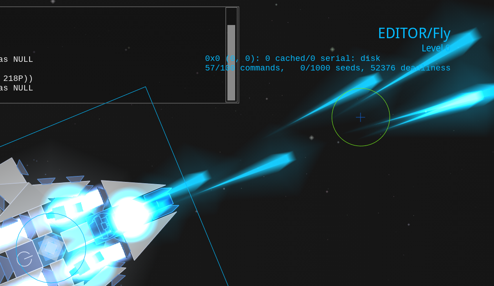
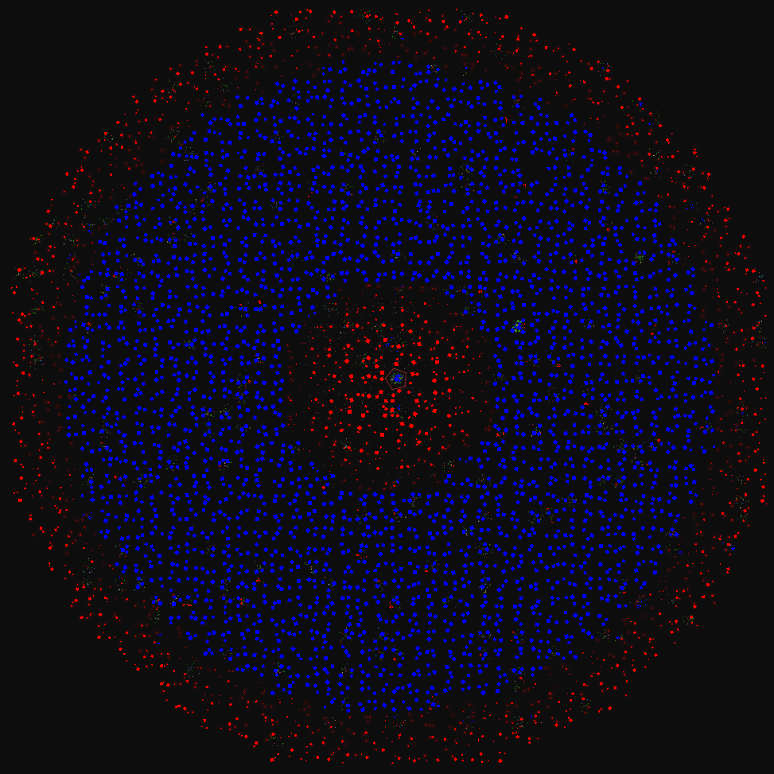
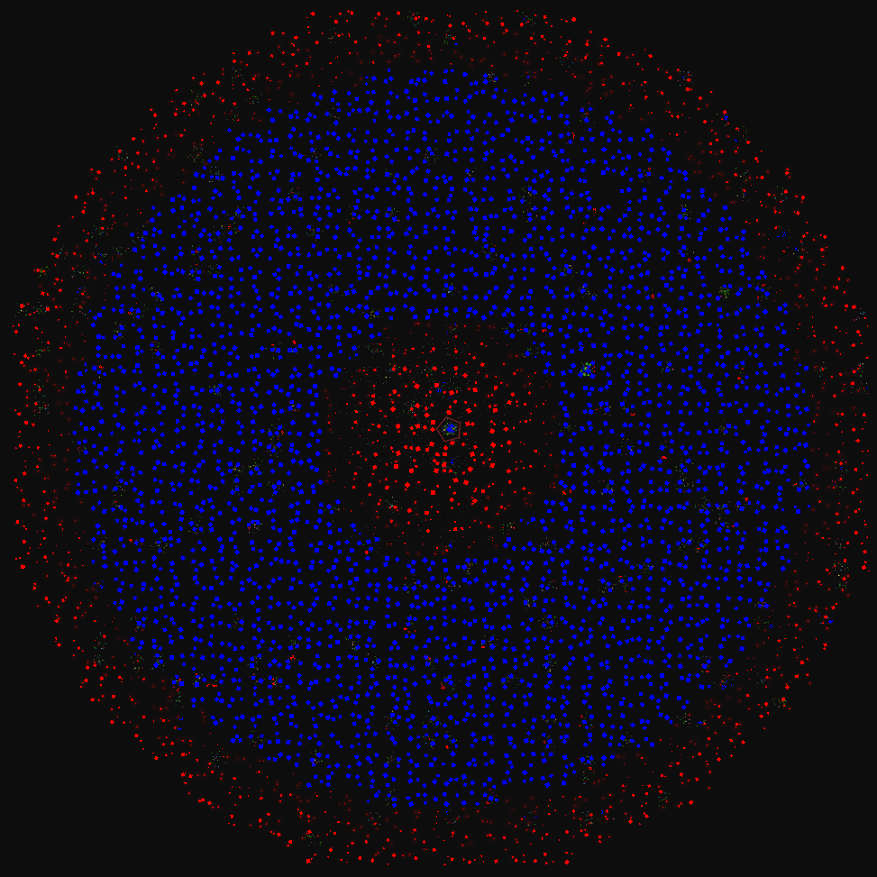
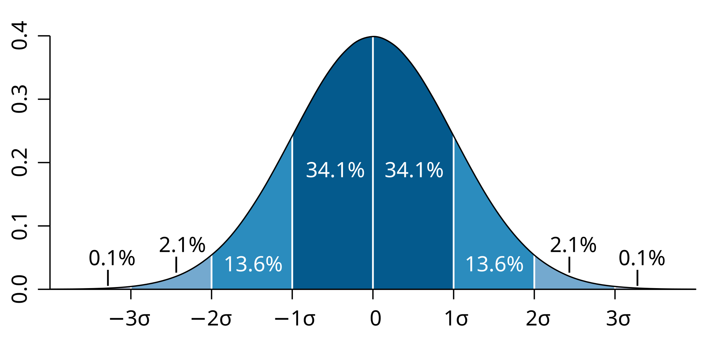

Reassembly Modding by Example
Reassembly modding is fun. This resource has three goals:
- To be what the average modder constantly checks to get field names correct,
- To document more obscure parts of Reassembly modding (frags, shrouds, jank, etc.),
- And to have some possibly useful advice on improvement and productivity when modding Reassembly.
Reassembly Discord: https://discord.gg/8fCjt3J
Written by Luexks.
Mod Structure
Local (i.e., what you create) mod folders are stored in the mods/ folder, which must be created next to the data/ folder at the following location:
C:/Users/<your username here>/Saved Games/Reassembly/
You should now have what looks like this:
Reassembly/
├── data/
└── mods/ # This is the folder you just created
Now, make your new mod's folder into mods/.
Reassembly/
├── data/
└── mods/
└── Terran V2/ # Name it something suitable.
# If it's a faction mod, call it the name of the faction.
There are multiple data/ folders scattered around your computer. One in Save Games/, one in the games actual installation, and one in the Steam cloud folder if you're using that. Mod structure mirrors the structure of the Reassembly data/ folders. If your mod has the same folder and file names as those in the Reassembly data/ folders then it will work. The data/ folders are grouped up when the game is run and all the common files and folders between both mods and the base game are merged.
This resource is organised by Reassembly's moddable files and folders. Below is what mod folders tend to look like:
Reassembly/
├── data/
└── mods/
└── Blue Sun/
├── audio/
│ ├── sub_folder_for_lasers/
│ │ ├── laser_0.ogg
│ │ ├── laser_1.ogg
│ │ └── laser_2.ogg
│ ├── machine_gun_0.ogg
│ ├── machine_gun_1.ogg
│ └── machine_gun_2.ogg
│
├── ships/
│ ├── 256_ship_1.lua
│ ├── 256_ship_2.lua
│ └── 256_ship_3.lua
│
├── folder_for_unused_ships_that_i'll_delete_before_i_post_the_mod/
│ └── 256_ship_wip.lua
│
├── audio.lua
├── blocks.lua
├── cvars.txt
├── factions.lua
├── regions.lua
├── shapes.lua
│
├── preview.png # Here's your reminder that all of these images individually must be >1 MB to get uploaded to the Steam Workshop.
├── capture1.jpg # You can have as many `capture#.jpg`s as you want.
├── capture2.jpg
├── capture3.jpg
│
└── anything.txt # Random stuff that won't be picked up by the game
Publishing to the Steam Workshop
Sandbox Basics

The sandbox is where a faction's blocks can be tested out and where ships can be built without anything annoying getting in the way.

Sandbox Modes
There are 3 modes for interacting with the sandbox:
-
Fly: start controlling the selected ship.
 -
Command: select ships and see how your ships will look in game.

-
Construct: interact with everything with the controls of the campaign's editor and look at the selected ship's construction info in the bottom right.

Switch between the modes by pressing the corresponding number keys without having your mouse cursor over the console. (1 for fly, 2 for command, 3 for construct.)
Interacting with the Console
Hovering your mouse over the console in the top left lets you type console commands.
Pressing Tab will either autocomplete what you are typing or list out what options you could type.
For example, pressing tab on an empty console will give you every command in a list:

Many commands do an action at the deploy location, the blue circle with an X. Change its location by double clicking.
Also, if you use the shortest distinct way of typing the command, the console will understand it. These abbreviations will be shown in brackets next to the full versions of commands.

Spawning in Palettes
Each faction has a palette that can be spawned in using the palette (pa) command followed by either its group in the blocks.lua or its name in the factions.lua.
You can also use the minpalette (mi) command to only spawn in one of each scale of block to keep your workspace small.
Work with the palette using normal editor controls by switching to command mode by pressing 3.
Looking at Ships
The main use of the command mode other than selecting ships is to look at ships without the construct mode's visual clutter.
This is useful if you care about how lines are drawn or if you just want to see how your ships will look in game.
Flying Ships
Duplicate your ship in construct mode (3) and then fly it around away from your construction area with fly mode (1).
(Always duplicate your ships before flying them so that they can always be saved in their latest state and so that they do not reassemble to a previous state if activated.)
Saving Modded Ships
Once you have spawned in a palette and made a ship with a command, save it to your mod's ships/ folder with the ssave <Ship Name Here> (ss) command. Note that you must use underscores instead of spaces.
Note that if neither your ship has a corresponding faction defined in the faction.lua nor there is a preexisting ships/ folder, your ship will instead be saved to C:/Users/<your username here>/Saved Games/Reassembly/Data/ships/.
Exporting Ships
Another way of turning ships into files is by using the export <Ship Name Here> (expo) command. This sends the ship to your desktop, which is useful when exporting ships made with vanilla factions so that you do not have to search in the game files.
Spawning Fleet Palettes
Spawn in a faction's fleets by using the fleetpalette (fleetp) command followed by either its faction ID or its name in the factions.lua.
(fleetpalette 0 spawns in plants, fleetpalette -10 spawns in every faction except for the Contestants, and specifying any other negative faction ID spawns in every faction plus the Contestants.)
Saving the Sandbox
Use Ctrl + S to save the state of the sandbox.
If you want a clean state for your sandbox a big block of text saying 'IN THE BEGINNING WAS THE COMMAND LINE', use the cl command to clear everything and the do Ctrl + S.
Opening and Closing the Console
Use the ` or ~ buttons without the mouse cursor over the console to open and close the console view. Works everywhere and not just the sandbox (save for most menus).
Pressing Esc also closes the console view.
Time Settings
Use P without the mouse cursor over the console to freeze and unfreeze time.
Use O in the same way to progress Reassembly's simulation by 1 update (can be held down).
Use { to speed up time by 50% and } to slow it down by 50% (updates per second remains constant).
Use the deb fps command to open the FPS debugger in the bottem left to check update rate and UPS.`
Further Ship Testing
This chapter covers how to understand a ship more than how well it flies and whether it shoots.
Activating and Deactivating Ships
The activate (ac) command activates the selected ships and the deactivate (dea) command deactivates the selected ships.
Activated ships have AI control and reassemble themselve's to their state when activated.
Spawning Targets and Asteroids
The target (ta) and asteroid (as) command are useful for testing how deadly your weapons are.
target 1000 and asteroid are good defaults (no need to specify their other fields).
Fighting Fleets
The fleet <Fleet Index> <Total P> command spawns a fleet of the specified fleet index and total P, which is useful for balancing.
blocks.lua
blocks.lua is well-named. It controls the blocks of a mod and can become the most complicated of all the files you work with in a Reassembly mod.
This section will be like a shopping list. Do you want to add a shield? Go to the shield chapter in the section on block features. Do you want to add block decals using shrouding? Go to the shrouding chapter.
But before you do any of that cool stuff, here's how to set up your blocks.lua and not have to deal with Reassembly undecipherable punctuation errors at you:
{
{<ID here> -- First block
<block stuff here>
}
{<Different ID here> -- Second block
<more block stuff here>
}
{<Another Different ID here> -- Third block
<even more block stuff here>
}
}
Brackets are how the game keeps understands when one thing starts and ends and what something contains.
Below is how the above structure might be represented if it actually defined three blocks:
{
{ 17000
group=98
sort=1
fillColor=0x5555AA
fillColor1=0x3333AA
lineColor=0xFFFFFF
shape=SQUARE
scale=1
name="Hull"
blurb="1x1\nBasic structure"
durability=1.001
density=0.1
features=PALETTE
}
-- Extended blocks copy the fields of the blocks they extend.
{ 17001 extends=17000 scale=2}
{ 17002 extends=17000 scale=3}
}
If you are a beginner, read Basic Fields and Hull and Block Features.
Basic Fields and Hull
Below are some basic fields that should be defined for every block, using hull as a example:
{ 17000 -- This is the block's ID that the game uses to keep track of things.
-- Keep them within the range 17000-26000.
group=98 -- The command `palette 98` will spawn this block.
sort=1 -- Orders blocks in the campaign's databank.
-- A block's color alternates between fillColor and fillColor1.
-- All 3 color fields can be either 0xRRGGBB, for red green blue,
-- or 0xAARRGGBB, for alpha (the less the alpha, the greater the transparency),
-- then red, green, blue.
fillColor=0x5555AA
fillColor1=0x3333AA
-- Note that lines do not render transparency even when defined with 0xAARRGGBB.
lineColor=0xFFFFFF
-- Base game shapes are text, custom shapes are whole numbers.
shape=SQUARE
-- Scales count up from 1.
scale=1
name="Hull"
blurb="1x1\nBasic structure"
-- Block health is calculated per block based on its durability and area,
durability=1.00001
-- Don't set durability to 1 if you want to use block extensions as
-- block health will not be recalculated for each block.
-- Block mass is calculated per block based on its density and area,
density=0.1
-- The greater the grow rate, the faster the block grows.
growRate=20
-- Give every block the PALETTE feature if you want it to show up in the campaign.
features=PALETTE
}
{ 17001 extends=17000 scale=2 blurb="2x2\nBasic structure" }
Block Features
The use of block features are how different types of blocks are created.
Say you want a generator, you would use features=GENERATOR.
Say you want a generator that also produced R. To do this you would add a delimiting pipe | character between the word GENERATOR and PHOTOSYNTH, giving you features=GENERATOR|PHOTOSYNTH.
Although there are exceptions, most block types are defined by either one or multiple feature flags. Features are what make Reassembly modding versatile.
Block Extensions
The extends field takes the Block ID of another block and duplicates all of that block's data into the new block. Fields after the extends field give the new block its differences.
{
{ 17000
name="My First Block"
group=78
sort=0
shape=SQUARE
scale=1
features=PALETTE
-- Other block stuff here.
}
{ 17001 extends=17000 scale=2
name="My Second Block, which is exactly the same,"
blurb="but is scale 2 and has a blurb and a different name."
}
}
Looks at the above block of ID '17001'. It uses block extension, an great utility that makes block creation productive and concise.
Block extensions allow you to not have to rewrite stuff over and over again. It's especially useful for creating hull palettes.
Getting the most out of block extensions
Have everything in a faction as interconnected by using block extensions. If you have a good plan of what you are making, it will save you time.
Below is how you might want to map out an extension hierachy. The example has 3 types of hull, each containing squares and triangles, both of which have 4 scales, plus some non-hull components. Every branch represents an extends field. This is how I manage my mods.
Original Hull Square
├── Scale 2
├── Scale 3
├── Scale 4
│
├── Hull Triangle
│ ├── Scale 2
│ ├── Scale 3
│ └── Scale 4
│
│
├── Differently Colored Hull Square
│ ├── Scale 2
│ ├── Scale 3
│ ├── Scale 4
│ └── Differently Colored Hull Triangle
│ ├── Scale 2
│ ├── Scale 3
│ └── Scale 4
│
│
├── Armored Hull Square
│ ├── Scale 2
│ ├── Scale 3
│ ├── Scale 4
│ └── Armored Hull Triangle
│ ├── Scale 2
│ ├── Scale 3
│ └── Scale 4
│
│
├── Command
│
├── Generator Scale 1
│ ├── Generator Scale 2
│ ├── Generator Scale 3
│ └── Generator Scale 4
│
├── Gun Scale 1
│ ├── Gun Scale 2
│ └── Gun Scale 3
│
└── Different Type of Gun Scale 1
├── Different Type of Gun Scale 2
└── Different Type of Gun Scale 3
I like making the most of block extension but I keep different components seperate to not sacrifice my ability to create and edit stuff.
For example, I like seperating different guns in the extends tree. This makes them easier to work with as they do not depend on each other for features.
Getting Blocks to Show Up in the Campaign's Databank
Use PALETTE for everything you want a player to access, use NOPALETTE for everything you don't want a player to access.
When a block has PALETTE, it will always shows up in campaign databank regardless of being present on one of the faction's ships.
{ 17000
features=PALETTE
}
When a block has NOPALETTE, it will never shows up in campaign databank.
NOPALETTE blocks cannot be accessed by scaling in the campaign.
{ 17000
features=NOPALETTE
}
Commands
{ 17000
features=COMMAND
blurb="The ship of this command cannot regenerate at all."
}
{ 17001
features=COMMAND|REGROWER
blurb="The command's ship can regenerate missing parts but not using debris."
}
{ 17002
features=COMMAND|ASSEMBLER
blurb="The command's ship can regenerate normally and by using debris."
}
Commands commonly have either the REGROWER or the ASSEMBLER features.
REGROWER allows the ship to be able to regenerate missing parts.
ASSEMBLER is the same as REGROWER, but also allows ships to reassemble themselves using parts from debris.
The command Field
Commands can also contain the command field, but it is unnecessary for most ships as the values it contains are controlled by factions.lua and how Reassembly handles blueprints.
Most use cases do not need to define all three command flags.
{ 17000
features=COMMAND
command={
flags=RECKLESS|HATES_PLANTS -- These take priority over the faction's AI flags.
faction=98 -- Faction ID this command will be assigned to.
blueprint="98_Test_Ship" -- Blueprint that the command will become.
}
}
Command Flags
These are the flags which are used for command={flags} and in aiflags.
NONE: does nothing.METAMORPHOSIS: AI will occasionally change blueprints.FOLLOWER: follows player.ATTACK: overrides all other command flags and makes AI attack ruthlessly. Used internally for tournament mode.FLOCKING: move in a flock with nearby allied ships at the speed of the slowest one.RECKLESS: disengage less.AGGRESSIVE: initiate attack more easily.CAUTIOUS: initiate attack less easily.SOCIAL: call for help when attacked.PEACEFUL: never initiate attack.WANDER: wander randomly if nothing else to do. Recommended for most factions.HATES_PLANTS: kill plants if in range.FORGIVING: stop attacking more easily.TRACTOR_TRANSIENT: grab blocks from the environment and use them.DODGES: dodge projectiles.RIPPLE_FIRE: use ripple fire on weapons.SPREAD_FIRE: use spread fire on weapons.BAD_AIM: aim poorly.POINT_DEFENSE: act like a point defense drone.INACTIVE: become a vegetable, yum.SMART_FIRE: use spread fire when enemy is expected to dodge.NO_PARENT: do not follow parent ship.CHILDREN_SET: used internally for AI ships that should not change their children blueprints as set by the player.BLUEPRINT_SET: used internally for AI ships that should not change their own blueprint as set by the player.HANGOUT: used to make the Anisoptera ship spin in circles :P.PACIFIST: never attack even when attacked.FIRE_AT_WILL: ignore parent ship target.
The following command flags can also be used for normal factions but at set in vanilla in the bindings menu:
ALWAYS_KITE: always attack from max range.ALWAYS_RUSH: always attack at closest range regardless of incoming damage.ALWAYS_MANEUVER: always dodging while attacking.AI_BINDING: attack from range of highest binding weapon that has not been destroyed.
Resource Containers
{ 17000
capacity=50
}
Resource Collectors
'Tractor beam' is a synonym for 'resource collector'.
{ 17000
features=TRACTOR
tractorRange=500
-- Resource Collectors tend to also store R.
capacity=50
}
Resource Producers
'Photosynthesizer' and 'solar panel' are synonyms for 'resource producer'.
{ 17000
features=PHOTOSYNTH
photosynthPerSec=0.2
-- Resource Producers tend to also store R.
capacity=50
}
Generators
{ 17000
features=GENERATOR
generatorCapacityPerSec=150
powerCapacity=150
-- Generators tend to also store R.
capacity=50
}
Thrusters
{ 17000
features=THRUSTER
thrusterForce=50000 -- =50K
-- When a thruster is turned on, its thruster force is multipled by
-- its thruster boost for `thrusterBoostTime` seconds.
thrusterBoost=2.0
thrusterBoostTime=3.0
-- Thruster trail colors are decided by these two 0xAARRGGBB values.
-- thrusterColor controls the color of the main thruster trail,
thrusterColor=0xFFFFFFFF
-- While thrusterColor1 controls the color of the trail
-- immediately at the thruster.
thrusterColor1=0xFFFFFFFF
}
Thruster Colors
The following videos each show the area of one thruster color type on a stationary vessel with thrusterForce=50000:
- Only
thrusterColor
{ 17000
thrusterForce=50000
thrusterColor=0xFFFFFFFF
thrusterColor1=0x01000000
}
- Only
thrusterColor1
{ 17000
thrusterForce=50000
thrusterColor=0x01000000
thrusterColor1=0xFFFFFFFF
}
Rotator Thrusters
{ 17000
features=THRUSTER|ROTATOR
-- Similar fields to those of turreted weapons.
rotatorSpeed=6
rotatorLimit=pi -- *
-- Other thruster fields are identical:
thrusterForce=50000
thrusterBoost=2.0
thrusterBoostTime=3.0
thrusterColor=0xFFFFFFFF
thrusterColor1=0xFFFFFFFF
}
A basic rotator thruster to show that it rotates weirdly with different player control schemes:
Rotator Limit Bug
The field rotatorLimit is bugged such that the rotator thruster always faces towards the front of the ship instead of the front of the block as one would expect.
Here is an example of 4 rotator thrusters with turretLimit=pi using the scale 2 CANNON shape to show that they face outwards from the command:
{ 17000
features=PALETTE|THRUSTER|ROTATOR
shape=CANNON
scale=2
rotatorLimit=pi
}
And here is the same thing but with turretLimit=0:
{ 17000
features=PALETTE|THRUSTER|ROTATOR
shape=CANNON
scale=2
rotatorLimit=0
}
Torquers
Torquers exert a turning force on the ship.
{ 17000
features=TORQUER
torquerTorque=10000 -- =10K
}
Factories
There are multiple types of factory blocks, but the default FACTORY factories are the most common.
{ 17000
-- TRACTOR is not strictly necessary for factories.
features=FACTORY|TRACTOR
-- Factories tend to also store R and collect R.
tractorRange=500
capacity=50
}
Other Types of Factories
Self-Factory
To-do. Documentation states that ships with SELFFACTORY can only spawn their own design.
{ 17000
features=SELFFACTORY
}
Telespawn
TELESPAWN is like FACTORY, but ships are 'teleported' in, fully built, and for no R cost.
{ 17000
features=TELESPAWN
}
Shields
{ 17000
features=SHIELD
shield={
strength=100 -- Maximum shield health.
regen=20 -- 20 regeneration and 20 energy used up per second.
radius=40
delay=3 -- Delay before shield regenerates health after taking damage.
armor=0 -- *
color=0xFFFFFFFF -- AARRGGBB color value.
damagedColor=0xFFFFFFFF -- AARRGGBB color value.
lineColor=0xFFFFFF -- RRGGBB color value.
}
}
* For the armor field, see Features and Fields Not To Use.
Void Shields
Void shields are an unintended varient of standard shields that have negative strength and regen, which are both conventionally set to -1.
Here is a list of what they do:
- Constantly radiates the shield death particle effect.
- When hit by explosive weaponry they take 0 damage but blocks in the explosion radius still take damage.
- When hit by non-explosive weaponry, the void shield block's health itself is used as the shield health.
- Does not work if the block or ship it is mounted on has no block with COMMAND
- The
armorfield doesn't function. - May have other yet undiscovered effects.
{ 17000
features=SHIELD
shield={
-- These fields are necessary:
strength=-1
regen=-1
-- These can be anything:
radius=100
delay=3
}
}
Power Armor
A shield block, with a shield radius so small that it the shield cannot be hit, redirects incoming damage that hits the block to the health pool of the shield. As the shield block can only be destroyed when its shield goes down, the survivability of the block will be dependent on the survivability of the shield.
If a shield's delay is 0 and the ship it is attached to has enough power, then it can spend the ship's power to regenerate any amount of damage without being destroyed, as long as the shield's regen and strength provide enough buffer for any incoming damage.
Shield blocks like this translate the power store of their ship directly into survivability, and are thus called 'power armor'.
{ 17000
features=SHIELD
health=1
shield={
strength=100
regen=10000
radius=1
delay=0
color=0xFFFF0000
lineColor=0x0000FF
damagedColor=0xFFFF0000
}
}
The following example showcases the difference between power armor on a ship with high power generation (Green) and one without (Red) using the Red's Tempest.
{ 17001 features=GENERATOR generatorCapacityPerSec=0 powerCapacity=50000
fillColor=0xFF0000 fillColor1=0xFF0000 }
{ 17002 features=GENERATOR generatorCapacityPerSec=10000 powerCapacity=50000
fillColor=0x00FF00 fillColor1=0x00FF00 }
Notice how the power armor only takes damage when the ship's power runs out after enough fire:
Power armor is effective against damage spread out over time, especially lasers, but is vulnerable to high amounts of instantaneous damage that is greater than the buffer of the shield's strength.
Teleporters
{ 17000
features=TELEPORTER
-- Energy used up per unit of mass to teleport the ship.
teleporterPOWER=4
}
Melee blocks
Sentinel armor spikes have meleeDamage set to 5.0, which equates to 500% of base collision damage.
{ 17000
features=MELEE
-- This is a multiplier to melee damage.
meleeDamage=5.0
}
Other Collision: Bumper and Elasticity
Elasticity
Bounciness of a block when it collides. More elasticity means more bounciness. Should be between 0.0 and 1.0.
{ 17000
elasticity=0.4
}
Bumper
Does not take melee damage when colliding. Anti-melee armor.
{ 17000
features=BUMPER
}
Explosive Blocks
{ 17000
features=EXPLODE
explodeDamage=50
explodeRadius=50
explodeStdDev=10 -- *
explodeFaction=98 -- The specified faction will not take damage from the explosion.
}
*For the explodeStdDev field, see Standard Deviation Fields.
Invulnerable Blocks
Bullets phase through invulnerable blocks which are not commands.
{ 17000
features=INVULNERABLE
}
Blocks with Lifetimes
{ 17000
lifetime=20 -- Time in seconds after block is created that it destroys itself.
}
Noclipping blocks
Noclipping blocks have just their own collisions disabled, not the entire ship's blocks.
{ 17000
features=NOCLIP
}
{ 17001
features=NOCLIP_ALLY -- Only noclips with blocks of the same faction.
}
Blocks that support plant growth
Seeds, plants, and buildings can all attach to environmental blocks.
{ 17000
features=ENVIRONMENTAL
}
Seeds
Roots
Cosmetic Features
All of the following features are purely decorative and do nothing.
Internal Lines
Block always renders lines.
{ 17000
features=INTLINES
}
No Icon
Block doesn't renders icons.
{ 17000
features=NOICON
}
No Recolor
Block is not recolored by color schemes.
{ 17000
features=NORECOLOR
}
Shrouding
A shroud is a purely decorative part of a block defined using the shroud field.
When a weapon with the TURRET or ROTATOR is shrouded, the shroud takes on the rotation of the turret or rotator.
{ 17000
fillColor=0xFF555555
fillColor1=0xFFAAAAAA
lineColor=0xFFFFFFFF
shroud={
{
shape=SQUARE -- Note that scales cannot be used.
size={10.0,5.0} -- Size values can be negative for mirroring.
-- (Square shrouds' Y sizes are doubled)
offset={2.5,0,0.01} -- X and Y offset is relative to icon center *.
-- Z is 3D draw order. Increment by 0.02.
-- Higher Z shrouds are drawn on top.
-- Equal Z shrouds intersect their lines.
-- 0 Z sets Z by order of shroud shapes in the list.
taper=0.5 -- Only for shrouds with shape=SQUARE.
-- Multiplies width of the square's front.
angle=90*pi/180 -- Angle in radians. (add '*pi/180' for degrees)
-- If the shroud's size is a multiple of the
-- shape's bounding box (for a scale 1 square
-- this could be size={10.0*2,10.0*2}), the shroud
-- is scaled and then rotated,
-- but if not, the size is applied after
-- rotation, so for shrouds that need precisely
-- angled blocks, it may be worth making custom
-- shapes that are angled to use for shrouding.
-- Shroud colors are assigned by the colors of the block.
-- 0: fillColor.
-- 1: fillColor1.
-- 2: lineColor.
tri_color_id= 0 -- fillColor of the shroud.
tri_color1_id=1 -- fillColor1 of the shroud.
line_color_id=2 -- lineColor of the shroud.
count=1 -- Usually undefined.
-- Works in the same way as barrelCount.
}
-- The other shrouds are defined using the compact format:
{ shape=OCTAGON size={10.0,10.0} offset={ 2.5, 0.0,0.02} tri_color_id=2 tri_color1_id=2 line_color_id=0 }
{ shape=OCTAGON size={15.0,10.0} offset={-2.5, 0.0,0.02} tri_color_id=0 tri_color1_id=0 line_color_id=1 }
{ shape=1239879 size={ 5.0, 5.0} offset={ 0.0,-5.0,0.03} angle=pi*-0.5 tri_color_id=2 tri_color1_id=2 line_color_id=0 }
}
}
Transparency in Shrouds
Because fillColor, fillColor1, and lineColor can have transparency with an alpha value less than FF (for example: fillColor1=7FFFFFFF, a 50% transparent white), shrouds can contain transparency. This chapter contains facts about transparency in shrouds.
Below is a basic example of a shroud with transparency:
{ 17142
group=98 features=PALETTE
fillColor =0xAA5555AA
fillColor1=0xAAFF33AA
lineColor =0xFFFFFFFF
shroud={
{ tri_color_id=0 tri_color1_id=0 line_color_id=2 shape=SQUARE size={15.0,2.0} offset={-5.0, 5.0,0.01} }
{ tri_color_id=1 tri_color1_id=1 line_color_id=2 shape=SQUARE size={15.0,2.0} offset={-5.0, -5.0,0.01} }
} }
When lineColor is Transparent
When lineColor is transparent, lines will still be rendered with full opacity, but if a shroud's fill color (tri_color_id or tri_color1_id) uses the transparent line color, it will take on the transparency. Likewise, if a shroud's line_color_id uses a transparent fill color, it will be rendered opaque.
An example of the same color ID being rendered opaque as a line color and transparent as a fill color:
-- Shape 271390000 is a circle.
{ 17000
features=INVISIBLE
fillColor =0x20FF0000
fillColor1=0x2000FF00
lineColor =0x200000FF
shroud={
{ tri_color_id=0 tri_color1_id=0 line_color_id=0 shape=271390000 size={10.0,10.0} offset={2.5, 15.0,0.01} }
{ tri_color_id=1 tri_color1_id=1 line_color_id=1 shape=271390000 size={10.0,10.0} offset={2.5, 0.0,0.01} }
{ tri_color_id=2 tri_color1_id=2 line_color_id=2 shape=271390000 size={10.0,10.0} offset={2.5,-15.0,0.01} }
} }
Overlaying Transparent Shrouds
Overlaying transparent shrouds is best explained in the context of getting more that three colors.
Getting More Than Three Colors
As shrouds are limited to using the three colors of their block (fillColor, fillColor1, and lineColor), they can usually only have three colors, but there are ways to get around the limitations.
Overlaying Transparent Shrouds
When shrouds with >100% alpha are overlayed, only the lines of the topmost shroud are rendered (unless the shrouds have the same Z level). However, the fill colors of all the shrouds are merged, which can be used to create more than three colors.
Below is an example of a shroud with 3 circles layered bottom up in the orders red, blue, and green, all with 50% alpha:
-- Shape 271390000 is a circle.
{ 17000
features=INVISIBLE
fillColor =0x7FFF0000
fillColor1=0x7F00FF00
lineColor =0x7F0000FF
shroud={
{ tri_color_id=0 tri_color1_id=0 line_color_id=0 shape=271390000 size={10.0,10.0} offset={2.500, 2.500,0.01} }
{ tri_color_id=1 tri_color1_id=1 line_color_id=1 shape=271390000 size={10.0,10.0} offset={4.665,-1.250,0.01} }
{ tri_color_id=2 tri_color1_id=2 line_color_id=2 shape=271390000 size={10.0,10.0} offset={0.335,-1.250,0.01} }
} }
Even though all the circles in the above example have the same Z level of 0.01, and the same alpha value of 50%, the intersection of all three colors is mostly blue because of the digital compositing process.
The digital compositing process decides the color of the pixels of the intersection with this process:
- The opaque black background defaults pixels to black: 0% red, blue, and green.
- The black color is mixed with the red circle of 50% alpha. This leads to a color that is 50% black, and 50% red. In terms of RGB, this is 50% red, 0% blue, and 0% green.
- Then, this dark red color is mixed with the green circle of 50% alpha. This creates a color that is 25% black, 25% red, and 50% green. In terms of RGB, this is 25% red, 50% green, and 0% blue (
0x3F7F00). - Finally, this slightly dark impure green color is mixed with a 50% blue. This leads to a color that is 12.5% black, 12.5% red, 25% green, and 50% blue. In terms of RGB, this is 14.29% red, 28.57% green, and 57.14% blue, (
0x244992) which is a dark blue color.
However, if you want a grey center from three circles colored red, green, and blue, you would need to make the final ratios after the digital compositing process of the three colors all equal.
To get a color of 1:1:1 R:G:B:
- Start with a full red at 100% alpha.
- Then split it equally with green using an alpha value of 50% for 50% red and 50% green.
- And then split those two colors with the third color, blue, at 33% alpha to get equal ratio for all colors.
The alpha values in order are:
- Red: 100%
- Green: 50%
- Blue: 33%
{ 17000
features=INVISIBLE
fillColor =0xFFFF0000
fillColor1=0x7F00FF00
lineColor =0x550000FF
shroud={
{ tri_color_id=0 tri_color1_id=0 line_color_id=0 shape=271390000 size={10.0,10.0} offset={2.500, 2.500,0.01} }
{ tri_color_id=1 tri_color1_id=1 line_color_id=1 shape=271390000 size={10.0,10.0} offset={4.665,-1.250,0.01} }
{ tri_color_id=2 tri_color1_id=2 line_color_id=2 shape=271390000 size={10.0,10.0} offset={0.335,-1.250,0.01} }
} }

Merging their colors is of course limited, but it is useful for creating gradients with a non-opaque shroud on top to get rid of the lines:
{ 17000
scale=4
fillColor =0xFFFFFFFF
fillColor1=0xFFFFFFFF
lineColor =0x11000000
shroud={
{ tri_color_id=2 tri_color1_id=2 line_color_id=1 shape=SQUARE size={2* 1,20} offset={-10,0,0.01} }
{ tri_color_id=2 tri_color1_id=2 line_color_id=1 shape=SQUARE size={2* 2,20} offset={-10,0,0.01} }
{ tri_color_id=2 tri_color1_id=2 line_color_id=1 shape=SQUARE size={2* 3,20} offset={-10,0,0.01} }
{ tri_color_id=2 tri_color1_id=2 line_color_id=1 shape=SQUARE size={2* 4,20} offset={-10,0,0.01} }
{ tri_color_id=2 tri_color1_id=2 line_color_id=1 shape=SQUARE size={2* 5,20} offset={-10,0,0.01} }
{ tri_color_id=2 tri_color1_id=2 line_color_id=1 shape=SQUARE size={2* 6,20} offset={-10,0,0.01} }
{ tri_color_id=2 tri_color1_id=2 line_color_id=1 shape=SQUARE size={2* 7,20} offset={-10,0,0.01} }
{ tri_color_id=2 tri_color1_id=2 line_color_id=1 shape=SQUARE size={2* 8,20} offset={-10,0,0.01} }
{ tri_color_id=2 tri_color1_id=2 line_color_id=1 shape=SQUARE size={2* 9,20} offset={-10,0,0.01} }
{ tri_color_id=2 tri_color1_id=2 line_color_id=1 shape=SQUARE size={2*10,20} offset={-10,0,0.01} }
{ tri_color_id=2 tri_color1_id=2 line_color_id=1 shape=SQUARE size={2*11,20} offset={-10,0,0.01} }
{ tri_color_id=2 tri_color1_id=2 line_color_id=1 shape=SQUARE size={2*12,20} offset={-10,0,0.01} }
{ tri_color_id=2 tri_color1_id=2 line_color_id=1 shape=SQUARE size={2*13,20} offset={-10,0,0.01} }
{ tri_color_id=2 tri_color1_id=2 line_color_id=1 shape=SQUARE size={2*14,20} offset={-10,0,0.01} }
{ tri_color_id=2 tri_color1_id=2 line_color_id=1 shape=SQUARE size={2*15,20} offset={-10,0,0.01} }
{ tri_color_id=2 tri_color1_id=2 line_color_id=1 shape=SQUARE size={2*16,20} offset={-10,0,0.01} }
{ tri_color_id=2 tri_color1_id=2 line_color_id=1 shape=SQUARE size={2*17,20} offset={-10,0,0.01} }
{ tri_color_id=2 tri_color1_id=2 line_color_id=1 shape=SQUARE size={2*18,20} offset={-10,0,0.01} }
{ tri_color_id=2 tri_color1_id=2 line_color_id=1 shape=SQUARE size={2*19,20} offset={-10,0,0.01} }
{ tri_color_id=2 tri_color1_id=2 line_color_id=1 shape=SQUARE size={2*20,20} offset={-10,0,0.01} }
{ tri_color_id=2 tri_color1_id=2 line_color_id=1 shape=SQUARE size={2*20,20} offset={-10,0,0.03} }
} }

They can also fade into the background:
{ 17000
features=INVISIBLE
scale=4
fillColor =0xFFFFFFFF
fillColor1=0xFFFFFFFF
lineColor =0x050000FF
shroud={
{ tri_color_id=2 tri_color1_id=2 line_color_id=1 shape=SQUARE size={2* 1,20} offset={-10,0,0.01} }
{ tri_color_id=2 tri_color1_id=2 line_color_id=1 shape=SQUARE size={2* 2,20} offset={-10,0,0.01} }
{ tri_color_id=2 tri_color1_id=2 line_color_id=1 shape=SQUARE size={2* 3,20} offset={-10,0,0.01} }
{ tri_color_id=2 tri_color1_id=2 line_color_id=1 shape=SQUARE size={2* 4,20} offset={-10,0,0.01} }
{ tri_color_id=2 tri_color1_id=2 line_color_id=1 shape=SQUARE size={2* 5,20} offset={-10,0,0.01} }
{ tri_color_id=2 tri_color1_id=2 line_color_id=1 shape=SQUARE size={2* 6,20} offset={-10,0,0.01} }
{ tri_color_id=2 tri_color1_id=2 line_color_id=1 shape=SQUARE size={2* 7,20} offset={-10,0,0.01} }
{ tri_color_id=2 tri_color1_id=2 line_color_id=1 shape=SQUARE size={2* 8,20} offset={-10,0,0.01} }
{ tri_color_id=2 tri_color1_id=2 line_color_id=1 shape=SQUARE size={2* 9,20} offset={-10,0,0.01} }
{ tri_color_id=2 tri_color1_id=2 line_color_id=1 shape=SQUARE size={2*10,20} offset={-10,0,0.01} }
{ tri_color_id=2 tri_color1_id=2 line_color_id=1 shape=SQUARE size={2*11,20} offset={-10,0,0.01} }
{ tri_color_id=2 tri_color1_id=2 line_color_id=1 shape=SQUARE size={2*12,20} offset={-10,0,0.01} }
{ tri_color_id=2 tri_color1_id=2 line_color_id=1 shape=SQUARE size={2*13,20} offset={-10,0,0.01} }
{ tri_color_id=2 tri_color1_id=2 line_color_id=1 shape=SQUARE size={2*14,20} offset={-10,0,0.01} }
{ tri_color_id=2 tri_color1_id=2 line_color_id=1 shape=SQUARE size={2*15,20} offset={-10,0,0.01} }
{ tri_color_id=2 tri_color1_id=2 line_color_id=1 shape=SQUARE size={2*16,20} offset={-10,0,0.01} }
{ tri_color_id=2 tri_color1_id=2 line_color_id=1 shape=SQUARE size={2*17,20} offset={-10,0,0.01} }
{ tri_color_id=2 tri_color1_id=2 line_color_id=1 shape=SQUARE size={2*18,20} offset={-10,0,0.01} }
{ tri_color_id=2 tri_color1_id=2 line_color_id=1 shape=SQUARE size={2*19,20} offset={-10,0,0.01} }
{ tri_color_id=2 tri_color1_id=2 line_color_id=1 shape=SQUARE size={2*20,20} offset={-10,0,0.01} }
{ tri_color_id=2 tri_color1_id=2 line_color_id=1 shape=SQUARE size={2*20,20} offset={-10,0,0.03} }
} }
Sadly, there is no way to truly avoid rendering lines, as, when hiding lines, there must always be some higher-layered near-transparent shroud with its own rendered lines.
Never Firing Non-Turreted Launcher
A non-turreted never firing launcher, can hold a launchable that can have its own three colors and its own shroud.
The following example has 6 different colors (blending together to make two grays) using a small custom launcher and launchable shape:
{ 17000
features=COMMAND|GENERATOR|INVISIBLE|LAUNCHER|NEVERFIRE|NOICON
shape=271390004
fillColor =0xFFFF0000
fillColor1=0x7F00FF00
lineColor =0x550000FF
aihint_range=0
launcherPower=inf
shroud={
{ tri_color_id=0 tri_color1_id=0 line_color_id=0 shape=271390002 size={10.0,10.0} offset={2.500, 2.500,0.02} }
{ tri_color_id=1 tri_color1_id=1 line_color_id=1 shape=271390002 size={10.0,10.0} offset={4.665,-1.250,0.02} }
{ tri_color_id=2 tri_color1_id=2 line_color_id=2 shape=271390002 size={10.0,10.0} offset={0.335,-1.250,0.02} }
}
replicateBlock={
shape=271390005
fillColor =0xFF00FFFF
fillColor1=0x7FFF00FF
lineColor =0x55FFFF00
shroud={
{ tri_color_id=0 tri_color1_id=0 line_color_id=0 shape=271390002 size={10.0,10.0} offset={22.500, 2.500,0.02} }
{ tri_color_id=1 tri_color1_id=1 line_color_id=1 shape=271390002 size={10.0,10.0} offset={24.665,-1.250,0.02} }
{ tri_color_id=2 tri_color1_id=2 line_color_id=2 shape=271390002 size={10.0,10.0} offset={20.335,-1.250,0.02} }
}
}
}
Centering Shrouds on Non-Turreted Blocks
This chapter discusses how one can center their shrouds' offsets with an understanding of how shroud centers are defined for non-turreted blocks.
Icon Center
A shape's icon center is where the center of its icon is. It is defined by the average position of the shape's vertices.
Icon Radius
A shape's icon radius is the size of its icon. It is defined by the mininum distance between the maximum distance from the icon center to any vertex and the mininum distance from the icon center to any of the sides' midpoints.
Shroud Center
A shape's shroud center is the position of a shroud at offset={0.0,0.0,_}. It is defined by icon center minus half the icon radius.
Subtract the block's shape's shroud center from the offset of a shroud to center it.
For example, if you want to center the shroud in the middle of a scale 1 square, you would probably use the Python program below to figure out that the shroud center is {-2.5,0}. Next, you would subtract {-2.5,0} from your shroud's offset, {0.0,0.0,0.01} to get {2.5,0.0,0.01}.
Example Python Code for Calculating Shroud Centers
Abstract things, as simple as they are, must be calculated using comedically complex looking Python programs.
import math
def get_icon_center(vertices: list[(float, float)]) -> (float, float):
avg_x = sum(vertex[0] for vertex in vertices) / len(vertices)
avg_y = sum(vertex[1] for vertex in vertices) / len(vertices)
icon_center = (avg_x, avg_y)
return icon_center
def get_max_dist_icon_center_to_vertex(icon_center: (float, float), vertices: list[(float, float)]) -> float:
max_dist_icon_center_to_vertex = 0
for vertex in vertices:
dist_icon_center_to_vertex = math.dist(icon_center, vertex)
max_dist_icon_center_to_vertex = max(
max_dist_icon_center_to_vertex,
dist_icon_center_to_vertex
)
return max_dist_icon_center_to_vertex
def get_min_dist_icon_center_to_side_midpoint(icon_center: (float, float), vertices: list[(float, float)]) -> float:
min_dist_icon_center_to_side_midpoint = float('inf')
for vertex_index in range(len(vertices)):
vertex = vertices[vertex_index]
next_vertex = vertices[(vertex_index + 1) % len(vertices)]
side_mid_point = (
(vertex[0] + next_vertex[0]) / 2,
(vertex[1] + next_vertex[1]) / 2
)
dist_icon_center_to_side_midpoint = math.dist(icon_center, side_mid_point)
min_dist_icon_center_to_side_midpoint = min(
min_dist_icon_center_to_side_midpoint,
dist_icon_center_to_side_midpoint
)
return min_dist_icon_center_to_side_midpoint
def get_icon_radius(vertices: list[(float, float)]) -> (float, float):
icon_center = get_icon_center(vertices)
max_dist_icon_center_to_vertex = get_max_dist_icon_center_to_vertex(icon_center, vertices)
min_dist_icon_center_to_side_midpoint = get_min_dist_icon_center_to_side_midpoint(icon_center, vertices)
icon_radius = min(
max_dist_icon_center_to_vertex,
min_dist_icon_center_to_side_midpoint
)
return icon_radius
def get_shroud_center(vertices: list[(float, float)]) -> (float, float):
icon_center = get_icon_center(vertices)
icon_radius = get_icon_radius(vertices)
shroud_center = (icon_center[0] - 0.5 * icon_radius, icon_center[1])
return shroud_center
# Add you own shapes using the following as examples:
shapes = [
[(-5, -5), (-5, 5), (5, 5), (5, -5)], # Square
[(0, 0), (0, 5), (5, 0)], # Triangle
[(-10, -10), (50, 100), (0, 0)] # ???
]
for shape in shapes:
print(f"{shape}\n\t{get_shroud_center(shape)}\n")
Cannons
Below is an example cannon which has the most basic features.
{ 17000
features=CANNON
cannon={
damage=100 -- ...per shot fired.
roundsPerSec=5
muzzleVel=1000 -- Velocity of bullet.
range=1000 -- Distance travelled by bullet before it is destroyed.
power=10 -- ...per shot fired.
spread=0.1 -- Maximum random spread of bullets in radians.
color=0xFFFFFFFF -- AARRGGBB color value.
recoil=1 -- ...per shot fired.
}
}
To be precise, that definition of bullet range is not correct, as bullets are destroyed based a duration calculated from just their muzzleVel and the range.
If the bullet was fired from a stationary ship, then it would travel 1000 units at 1000 units per second over 1 second. However, if the bullet was fired from a moving ship, then the bullet would inherit its velocity.
For the above example, if the ship firing the bullet was travelling in the same direction as the bullet being fired, the bullet would travel a greater distance with a greater speed over the same amount of time.
Firing in Bursts
If you want a cannon to fire in bursts, you need to define its burstyness and roundsPerBurst.
The way that a cannon using burstyness fires is defined by its burstyness, roundsPerBurst, and roundsPerSec. Keep in mind that roundsPerSec is always constant.
The value of burstyness must be between 0.0 and 1.0.
A burstyness of 0 means that a cannon will not fire in bursts and a burstyness of 1 means that a cannon will fire the value of roundsPerBurst all at once.
Burstyness values in between 0 and 1 will fire however many roundsPerBurst they have, wait, and then fire another burst again.
{ 17000
features=CANNON
cannon={
-- This cannon will fire 5 bullets at once every 1 second.
burstyness=1
roundsPerSec=5
roundsPerBurst=5
-- Other cannon fields here.
}
}
Bullet Damage Output
Think of a bullet's damage output as its health which it 'spends' on damaging blocks. When the bullet runs out of damage output, it is destroyed.
More specifically, when a bullet (that's non-explosive=ENABLED) hits a block, it deal as much of its damage to the block as it can. If the bullet had more remaining damage output than the block's remaining health before the collision, then the bullet will continue existing with the block's prior remaining health subtracted from its damage output.
Explosive Cannons
If you want a cannon to fire explosives, you need to define its explosive and explodeRadius.
The explosive field has three flags for non-fragment bullets:
ENABLED: bullet explodes when hitting a target.FINAL: bullet explodes at either the end of its range or when the bullet's damage output is exhausted.PROXIMITY: bullet snaps its explosion to the closest enemy block relative to its explode radius.
(Explosive flags for fragments)
{ 17000
features=CANNON
cannon={
-- This bullet will explode on hitting a block.
-- It will deal its damage to all blocks in a radius of 50.
explosive=ENABLED
explosiveRadius=50
-- Other cannon fields here.
}
}
The explosive field is a flag type, so the way it works is similar to the features field for blocks. This means you can combine explosive flags for a desired effect, but this is unnecessary to know about with the three explosive flags stated prior unless you want to use Fragments.
Fragments
When a bullet is destroyed, it can produce fragments. These fragments can also produce fragments when they are destroyed, creating one of the most versatile systems in Reassembly modding.
Fragments are nested within projectile code and have the same field types as base cannons except for those which wouldn't make sense.
Look at the code below and look at the similarities between the base cannon bullet and the fragment which is nested within it:
{ 17000
features=CANNON
cannon={
damage=100
roundsPerSec=5
muzzleVel=1000
range=1000
power=10
spread=0.1
color=0xFFFFFFFF
recoil=1
burstyness=1
roundsPerBurst=5
explosive=ENABLED
explodeRadius=50
fragment={
damage=50
-- Fragments don't have `roundsPerSec`.
muzzleVel=500
range=500
-- Fragments don't need `power`.
spread=0.1
color=0xFFFFFFFF
-- Fragments have no need to exert `recoil`.
-- Fragments also don't have `burstyness`.
roundsPerBurst=5
explosive=ENABLED
explodeRadius=25
}
}
}
In fragments, roundsPerBurst is repurposed as the amount of fragments released when a bullet is destroyed.
In the code extract above, the base cannon bullet will split into 5 fragments, which are all identical. The fragments will also be created at a spread of 0.1 radians, or ~5.72°, as defined by the fragment's spread field.
Fragment Chaining
As fragments can be nested within each other, we can create fragment chains. Below is an example of one using conventional one-line fragments for easy reading:
{ 17000
features=CANNON
cannon={
damage=100
roundsPerSec=1
muzzleVel=50
range=50
power=10
-- Some fields have been left out for ease of explaining.
fragment={ damage=100 muzzleVel=50 range=50 roundsPerBurst=1
fragment={ damage=100 muzzleVel=50 range=50 roundsPerBurst=1
fragment={ damage=100 muzzleVel=50 range=50 roundsPerBurst=1
fragment={ damage=100 muzzleVel=50 range=50 roundsPerBurst=1
}}}} -- Closing brackets are lined up at the end of the chain.
}
}
In this code extract, there will be 5 fragment projectiles that spawn after one another in a chain.
The Relationship of range and muzzleVel
If you fire the cannon from the code extract above, you might notice something unexpected if you are unfamilier with fragment modding. Each new fragment is faster than the last by 50 units per second:
This is caused by each successive fragment inheriting the sum of the velocities of all the bullets that came before it.
To have uniform velocities on the bullets, one might expect the solution to be to make the muzzleVel equal 0, but this does not work:
cannon={
damage=100
roundsPerSec=1
muzzleVel=50
range=50
power=10
fragment={ damage=100 muzzleVel=0 range=50 roundsPerBurst=1
-- None of the other fragments are reached.
fragment={ damage=100 muzzleVel=0 range=50 roundsPerBurst=1
fragment={ damage=100 muzzleVel=0 range=50 roundsPerBurst=1
fragment={ damage=100 muzzleVel=0 range=50 roundsPerBurst=1
}}}}
}
Although the second bullet has velocity, it is inherited from the first stage. Think back to how bullet duration is calculated based on only a bullet's muzzleVel and range, not its current velocity.
Now, understand that the second bullet will never transition to the third stage as the second bullet is "attempting" to travel a range of 50 at a muzzleVel of 0. The journey to travel 50 units at 0 units per second is uncompletable, the bullet will never enter the third stage.
To achieve uniform velocities, we must make the muzzleVel unnoticably small as well setting its range small enough that the fragments' duration is calculated to not be infinite.
If we want the fragments to last for one second, similar to the base bullet, then we can set range to 1 and the muzzleVel to 1. The bullet will travel 1 unit at 1 unit per second over a time of 1 second.
cannon={
damage=100
roundsPerSec=1
muzzleVel=50
range=50
power=10
fragment={ damage=100 muzzleVel=1 range=1 roundsPerBurst=1
fragment={ damage=100 muzzleVel=1 range=1 roundsPerBurst=1
fragment={ damage=100 muzzleVel=1 range=1 roundsPerBurst=1
fragment={ damage=100 muzzleVel=1 range=1 roundsPerBurst=1
-- All fragments occur. success!
}}}}
}
Strangely, a bullet trying to travel a range of 0 at a muzzleVel of 0 completes its journey.
Patterns
For more control over how bullets are spawned, you can select various pattern flags for the pattern field of a bullet. They can be used in both base bullets and fragments.
Below is an example of a cannon using the RANDOM pattern, which would be the same as having pattern not defined.
cannon={
damage=100
roundsPerSec=1
muzzleVel=50
range=50
power=10
recoil=0
spread=pi*2
pattern=RANDOM
}
Below are all the bullet patterns, they can all be used on both base cannon bullets and fragments except for WAVE, which can only be used on base cannon bullets.
Random
pattern=RANDOM: default spread behaviour, choosing a random angle in the specified spread.
cannon={ spread=pi*2 pattern=RANDOM
damage=100 roundsPerSec=5 muzzleVel=50 range=50 recoil=0 }
Constant
pattern=CONSTANT: bullet will angle exactly at the spread angle. Positive spread angles bullet counterclockwise while negative spread angles bullets clockwise.
Firing counterclockwise:
cannon={ spread=pi*0.5 pattern=CONSTANT
damage=100 roundsPerSec=5 muzzleVel=50 range=50 recoil=0 }
Firing clockwise:
cannon={ spread=pi*-0.5 pattern=CONSTANT
damage=100 roundsPerSec=5 muzzleVel=50 range=50 recoil=0 }
Spiral
pattern=SPIRAL: bullets are evenly distributed within the spread angle. Needs roundsPerBurst and burstyness defined on base cannon bullets but only needs roundsPerBurst defined on fragments.
cannon={ spread=pi*0.5 pattern=SPIRAL roundsPerBurst=5 burstyness=0.5
damage=100 roundsPerSec=5 muzzleVel=50 range=50 recoil=0 }
Wave
pattern=WAVE: bullets are distributed according to a sine wave within the spread angle. Do not use on fragments.
cannon={ spread=pi*0.5 pattern=WAVE roundsPerBurst=20 burstyness=0.5
damage=100 roundsPerSec=5 muzzleVel=50 range=50 recoil=0 }
Absolute
pattern=ABSOLUTE: bullets do not inherit velocity of ship or previous bullets. It can be mixed with any of the other pattern flags.
This is without ABSOLUTE:
cannon={ spread=0
damage=100 roundsPerSec=5 muzzleVel=50 range=50 recoil=0 }
This is with ABSOLUTE:
cannon={ spread=0 pattern=ABSOLUTE
damage=100 roundsPerSec=5 muzzleVel=50 range=50 recoil=0 }
Explosive Flags for Fragments
There are fragment specific alternatives for ENABLED, FINAL, and PROXIMITY for the explosive field. Respectively, they are:
FRAG_IMPACT: bullet fragments when hitting a target but not when the bullet reaches the end of its range.FRAG_FINAL: bullet fragments at either the end of its range or when the bullet's damage output is exhausted.FRAG_PROXIMITY: bullet fragments when within proximity of an attackable block.
There is also FRAG_NOFLASH, which makes bullets with this flag spawn without producing a frag spawn particle.
(Explosive flags for non-fragments)
Bullet Poofs
There are four types of bullet poofs:
- Spawn poofs (SPs): when a bullet is spawned, the bullet spawns an SP.
- Despawn poofs (DPs): when a bullet reaches the end of its lifetime, the bullet spawns a DP.
- Primary spawn poofs (PSPs): the SP of the primary bullet stage. If fired from a turreted weapon, the PSP pins to where it was spawned on the turret.
- Hit despawn poofs (HDPs): the DP of a non-explosive bullet that hits a block and is despawned from running out of damage to deal. These travel in a random direction.
Notice how PSPs are twice the radius and are brighter than DPs:
{ 17000
features=CANNON
cannon={
damage=100
roundsPerSec=0.5
muzzleVel=200
range=100
power=10
color=0xFFFFFFFF
}
}
In the above example, the SPs are stationary but the DPs are not. This is because bullet poofs inherit the velocity of whatever spawned them, which in the case above includes a stationary ship and a moving projectile.
Below is a slow motion example to show how bullet poofs inherit velocity from a two-stage cannon:
{ 17000
features=CANNON
cannon={
damage=50
roundsPerSec=0.5
muzzleVel=200
range=100
power=10
color=0xFFFFFFFF
fragment={
damage=50
roundsPerBurst=1
muzzleVel=200
range=100
color=0xFFFFFFFF
}
}
}
When aesthetics demand it, bullet poofs can be removed using anti-bullet poof stages.
Anti-Bullet Poof Stages
This chapter covers how to create fragments that do not produce (or minimize) PSPs, SPs, and DPs.
There is included an [example of a clean fragment transition]
Anti-Primary Spawn Poof (Anti-PSP Stages)
There is no known way to fully get rid of a PSP, only to make them as invisible as possible and to prevent them from overlapping to reduce the accumulation of noticable opaqueness.
{ 17000
features=CANNON
cannon={
-- Anti-PSP stage:
roundsPerSec=0.3
power=10
damage=50
muzzleVel=200
range= 200*1.2
color=0xFFFF0000
fragment={
-- Genuine projectile stage:
damage=50
muzzleVel=1
range= 1*1.2
color=0xFF0000FF
explosive=FRAG_NOFLASH
}
}
}
Anti-Spawn Poof (Anti-SP Stages)
Spawn poofs of non-primary stages are simple to remove using explosive=FRAG_NOFLASH on the stage which spawns the SP.
{ 17000
features=CANNON
cannon={
-- Red, other primary stage.
roundsPerSec=0.3
power=10
damage=50
muzzleVel=200
range= 200*1.2
color=0xFFFF0000
fragment={
-- Blue, non-primary anti-SP stage:
damage=50
muzzleVel=1
range= 1*1.2
color=0xFF0000FF
explosive=FRAG_NOFLASH -- Makes this stage anti-SP.
}
}
}
Anti-Despawn Poof (Anti-DP Stages)
Getting rid of despawn poofs is less simple than for spawn poofs. DPs can either be removed by:
- Declaring
explosive=FINALon the stage which spawns the DP with the side effect that the bullet cannot to deal damage. - Declaring
explosive=FINALandexplodeRadius=1on the stage with the side effect that the bullet always plays the explosion sound effect on despawn.
Case 1: explosive=FINAL
Only having explosive=FINAL with no definition of explosiveRadius makes the bullet use the default explosiveRadius of zero, making it never hit anything and play no sound.
{ 17000
features=CANNON
cannon={
damage=50
roundsPerSec=1
power=10
muzzleVel=300
range=200
color=0xFFFFFFFF
explosive=FINAL -- Makes this stage anti-DP.
}
}
Case 2: explosvie=FINAL and explodeRadius=1
Having explosive=FINAL and defining explosiveRadius=1 makes the bullet able to deal damage and makes it play the explosion sound effect on despawn.
{ 17000
features=CANNON
cannon={
damage=50
roundsPerSec=1
power=10
muzzleVel=300
range=200
color=0xFFFFFFFF
-- Makes this stage anti-DP:
explosive=FINAL
explodeRadius=1
}
}
Example of a Clean Fragment Transition
The following fragment transition from the red bullet to the blue bullet contains no poofs, whereby the red anti-DP stage leads into the blue anti-SP stage:
{ 17000
features=CANNON
cannon={
-- Red anti-DP stage:
damage=25
muzzleVel=200
range= 200
roundsPerSec=0.8
power=10
color=0xFFFF0000
explosive=FINAL
projectileSize=1
fragment={
-- Blue anti-SP stage:
damage=25
muzzleVel=1
range= 1
color=0xFF0000FF
explosive=FRAG_NOFLASH
}
}
}
Note that despite this stage contains 50 units worth of damage, it can only ever deal 25 units of damage as the first stage's explosion will never overlap with anything as it's undefined explodeRadius is by default set to zero:
Muzzle Flash
Muzzle flash is a desirable effect for making cannons look like they fire rounds with more force.
Poof Muzzle Flash
This cannon uses a coloured PSP to make a circular muzzle flash.
{ 17000
features=CANNON
cannon={
-- Muzzle flash stage:
roundsPerSec=1
power=10
projectileSize=2
color=0xFFFFAA00
damage=1
muzzleVel=0
range=0
fragment={
-- Actual bullet:
damage=50
muzzleVel=200
range=200
color=0xFFFFFFFF
}
}
}
Bullet Muzzle Flash
This cannon uses a coloured bullet to make a bullet-shaped muzzle flash.
Below are what the stages do in order:
- An invisible anti-PSP stage.
- The visible bullet that makes the shape of a muzzle flash. Exists for 1000/40, or 0.04 seconds.
- This stage takes the fragment back in front of the gun. This means that the cannon does not look like it is shooting from behind itself.
- The actual bullet's stage.
{ 17000
features=CANNON
-- Muzzle flash stages:
-- Stage 1:
cannon={ damage=1 muzzleVel= 1 range= 0 color=1 roundsPerSec=10 power=10
-- Stage 2:
fragment={ damage=1 muzzleVel=-1000 range=-40 color=0xFFFFAA00 explosive=FINAL projectileSize=5 spread=0.2
-- Stage 3:
fragment={ damage=1 muzzleVel=-1000*4 range=-40*4 color=1 explosive=FINAL|FRAG_NOFLASH
fragment={
-- Actual bullet (stage 4):
damage=50
muzzleVel=1
range= 1
color=0xFFFFFFFF
explosive=FRAG_NOFLASH
}}}}
}
Bullet Shaping
Using the fragment system to create specific looks for a cannon projectile is called bullet shaping.
This chapter covers various types of common bullet shapes:
- Fragball
- Spikey Fragball
- Reverse Bullet
- 2-Tail Bullet
- 3-Tail Bullet
- n-Point Star
- X Shape Lense Flare Bullet
- n-Point Saw.
Fragball
A simple ball of 5 fragments that keeps its formation by inheriting velocity from the primary stage.
{ 17000
features=CANNON
cannon={
damage=1
roundsPerSec=1
power=10
muzzleVel=200
range=0
color=0xAAFFFFFF
explosive=FINAL
fragment={
roundsPerBurst=5
damage=25
spread=360*pi/180
muzzleVel=1
range= 1
color=0xAAFFFFFF
explosive=FRAG_NOFLASH
}
}
}
Spikey Fragball
Same as the other fragball but with more bullets with a higher velocity so that they are rendered with longer tails.
{ 17000
features=CANNON
cannon={
damage=1
roundsPerSec=5
power=10
muzzleVel=1500
range=0
color=0xAAFFFFFF
explosive=FINAL
fragment={
roundsPerBurst=12
damage=25
spread=360*pi/180
muzzleVel=1
range= 1
color=0xAAFFFFFF
explosive=FRAG_NOFLASH
}
}
}
Reverse Bullet
Simple bullet that appears backwards.
{ 17000
features=CANNON
cannon={
damage=1
roundsPerSec=1
power=10
muzzleVel=500
range=0
color=0xAAFFFFFF
explosive=FINAL
fragment={
spread=180*pi/180
pattern=CONSTANT
explosive=FRAG_NOFLASH
damage=50
muzzleVel=1
range= 0.5
color=0xAAFFFFFF
}
}
}
2-Tail Bullet
Two angled bullets inherit velocity from the primary stage to create an arrow shape.
{ 17000
features=CANNON
cannon={
damage=1
roundsPerSec=1
power=10
muzzleVel=500
range=0
color=0xAAFFFFFF
explosive=FINAL
fragment={
roundsPerBurst=2
damage=25
spread=30*pi/180
muzzleVel=1
range= 0.5
color=0xAAFFFFFF
explosive=FRAG_NOFLASH
pattern=SPIRAL
}
}
}
3-Tail Bullet
Three angled bullets inherit velocity from the primary stage to create a bullet with three tails.
{ 17000
features=CANNON
cannon={
damage=1
roundsPerSec=1
power=10
muzzleVel=1000
range=0
color=0xAAFFFFFF
explosive=FINAL
fragment={
roundsPerBurst=3
damage=25
spread=30*pi/180
muzzleVel=1
range= 0.5
color=0xAAFFFFFF
explosive=FRAG_NOFLASH
pattern=SPIRAL
}
}
}
n-Point Star
The SPIRAL pattern can be used to create an star bullet with any amount of points.
For an n-pointed star, you can calculate the value for the secondary stage's spread by using the formula pi*((n-1)/n)).
For example, an 8-pointed star's spread would be calculated with pi*((8-1)/8), which would be put into the fragment as spread=pi*7/8.
{ 17000
features=CANNON
cannon={
damage=1
roundsPerSec=1
power=10
muzzleVel=1000
range=0
color=0xAAFFFFFF
explosive=FINAL
fragment={
roundsPerBurst=8 -- Number of points of the star.
damage=25
spread=pi*7/8 -- Spread value here calculated from pi*((n-1)/n)).
muzzleVel=1
range= 0.5
color=0xAAFFFFFF
explosive=FRAG_NOFLASH
pattern=SPIRAL
}
}
}
X Shape Lens Flare Bullet
Similar to the X shape lens flare always fire decoration.
A more complex bullet that creates an X-shaped bullet that always faces in the same direction using muzzleVel=0 and still travels in the fired direction by inheriting velocity from the primary stage.
The function of the stages are as follows:
- Creates a PSP and supplies the velocity inherited by the rest of the fragment.
- Stage with
muzzleVel=0to force the fragment to face either right or left. - Rotates the fragment by 45° degrees.
- Splits the fragment into four bullets spread over a 270° spread.
- The actual bullet stage that can deal damage and is visible.
{ 17000
features=CANNON
-- 1st stage:
cannon={ damage=1 muzzleVel=1000 range=0 color=0xAAFFFFFF explosive=FINAL roundsPerSec=1 power=10
-- 2nd stage:
fragment={ damage=1 muzzleVel= 0 range=0 color=1 explosive=FINAL|FRAG_NOFLASH
-- 3rd stage:
fragment={ damage=1 muzzleVel= 1 range=0 color=1 explosive=FINAL|FRAG_NOFLASH spread= 45*pi/180 pattern=CONSTANT
-- 4th stage:
fragment={ damage=1 muzzleVel= 1 range=0 color=1 explosive=FINAL|FRAG_NOFLASH spread=135*pi/180 pattern=SPIRAL roundsPerBurst=4
-- 5th stage (actual bullet):
fragment={
damage=100
muzzleVel=1
range= 0.5
color=0xAAFFFFFF
}}}}}
}
n-Point Saw
A complex saw blade ring of bullets made out of n bullets defined by the roundsPerBurst value of the 3rd stage.
The spread of the 3rd stage can be calculated in a similar way to that of the n-Point Star, where the spread can be calculated using the formula pi*((n-1)/n)).
For example, a the spread of the 3rd stage of a 9-pointed star would be calculated with pi*((9-1)/9), which would be put into the 3rd stage as spread=pi*8/9.
The function of each stage is as follows:
- Creates a PSP and moves the fragment backwards a small distance. This accounts for the distance which the fragment moves forwards while assembling the saw formation so that it looks like the saw blade spawns from the right place.
- Reverses the fragment again so that it faces forwards without changing its position.
- Splits the fragment into n bullets (in this case, 9) which then travel outwards almost instantly.
- Cancels out the fragment's velocities so that it no longer changes position.
- This stage rotates by 60° anticlockwise using
pattern=CONSTANT. This stage is also the actual bullet stage that can deal damage and is visible.
{ 17000
features=CANNON
-- 1st stage:
cannon={ damage=1 muzzleVel=-1000 range= -10 color=0xAAFFFFFF explosive=FINAL roundsPerSec=1 power=10
-- 2nd stage:
fragment={ damage=1 muzzleVel=-2000 range= 0 color=1 explosive=FINAL|FRAG_NOFLASH
-- 3rd stage (defines how many bullets there are in the saw):
fragment={ damage=1 muzzleVel= 400 range= 12 color=1 explosive=FINAL|FRAG_NOFLASH pattern=SPIRAL roundsPerBurst=9 spread=pi*8/9
-- 4th stage:
fragment={ damage=1 muzzleVel= -400 range= 0 color=1 explosive=FINAL|FRAG_NOFLASH
-- 5th stage (actual bullet):
fragment={
damage=25
spread=60*pi/180
muzzleVel=1
range= 0.5
color=0xFFFFFFFF
explosive=FRAG_NOFLASH
pattern=CONSTANT
}}}}}
}
Fragbeams
Fragbeams are cannons that use fragments in such a way that they they look like a laser beam when fired.
This chapter will describe multiple distinct types of fragbeams, each example video includes the fragbeam firing at a target without commands and with commands, as well as advantages and disadvantages for each.
Synchronous, Evenly Spaced Fragbeam
This fragbeam uses pattern=SPIRALto make each bullet split into two travelling in opposite directions. After each split, the distance travelled by each stage decreases until the final stage is reached in synchrony. Because there are no uses of rangeStdDev, this fragbeam is evenly spaced.
{ 17000
features=CANNON
cannon={ damage= 1 muzzleVel=121*64 range=32 color=0xFFFFFFFF explosive=FINAL|FRAG_NOFLASH roundsPerSec=0.5 recoil=0
fragment={ damage= 1 muzzleVel= 1 range= 0 color=1 pattern=ABSOLUTE| CONSTANT spread=90*pi/180 explosive=FINAL|FRAG_NOFLASH
fragment={ damage= 1 muzzleVel=121*32 range=32 color=1 roundsPerBurst=2 pattern=ABSOLUTE|SPIRAL spread=90*pi/180 explosive=FINAL|FRAG_NOFLASH
fragment={ damage= 1 muzzleVel= 1 range= 0 color=1 pattern=ABSOLUTE| CONSTANT spread=90*pi/180 explosive=FINAL|FRAG_NOFLASH
fragment={ damage= 1 muzzleVel=121*16 range=16 color=1 roundsPerBurst=2 pattern=ABSOLUTE|SPIRAL spread=90*pi/180 explosive=FINAL|FRAG_NOFLASH
fragment={ damage= 1 muzzleVel= 1 range= 0 color=1 pattern=ABSOLUTE| CONSTANT spread=90*pi/180 explosive=FINAL|FRAG_NOFLASH
fragment={ damage= 1 muzzleVel=121* 8 range= 8 color=1 roundsPerBurst=2 pattern=ABSOLUTE|SPIRAL spread=90*pi/180 explosive=FINAL|FRAG_NOFLASH
fragment={ damage= 1 muzzleVel= 1 range= 0 color=1 pattern=ABSOLUTE| CONSTANT spread=90*pi/180 explosive=FINAL|FRAG_NOFLASH
fragment={ damage= 1 muzzleVel=121* 4 range= 4 color=1 roundsPerBurst=2 pattern=ABSOLUTE|SPIRAL spread=90*pi/180 explosive=FINAL|FRAG_NOFLASH
fragment={ damage= 1 muzzleVel= 1 range= 0 color=1 pattern=ABSOLUTE| CONSTANT spread=90*pi/180 explosive=FINAL|FRAG_NOFLASH
fragment={ damage= 1 muzzleVel=121* 2 range= 2 color=1 roundsPerBurst=2 pattern=ABSOLUTE|SPIRAL spread=90*pi/180 explosive=FINAL|FRAG_NOFLASH
fragment={ damage=25 muzzleVel= 1 range= 1 color=0xFFFFFFFF pattern=ABSOLUTE explosive= FRAG_NOFLASH
}}}}}}}}}}}}
}
This fragbeam advantage of being evenly spaced and having all of its visible fragments appear at the same time in synchrony.
However, it has the disadvantage of always having delay before it appears. This cannot be removed by using high speed bullets in a satisfactory way as it will cause differences across different UPS settings.
Synchronous, Unevenly Spaced Fragbeam
This fragbeam uses multiple stages with rangeStdDev to create variation in the distance travelled by each split of the fragment, causing a beam shape to form. This is done at both a high speed and without the loss of bullet travel distance fidelity due to each next stage having decreasing range and muzzleVel values. This approaches a high fidelity of unevenly spaced fragments by the last stage.
{ 17000
features=CANNON
cannon={ damage= 1 muzzleVel= 1 range= 0 color=1 explosive=FINAL|FRAG_NOFLASH roundsPerSec=4 recoil=0
fragment={ damage= 1 muzzleVel=500*4 range=10*4 rangeStdDev=10*4 color=1 pattern=ABSOLUTE explosive=FINAL|FRAG_NOFLASH roundsPerBurst=64
fragment={ damage= 1 muzzleVel=500*3 range=10*3 rangeStdDev=10*3 color=1 pattern=ABSOLUTE explosive=FINAL|FRAG_NOFLASH
fragment={ damage= 1 muzzleVel=500*2 range=10*2 rangeStdDev=10*2 color=1 pattern=ABSOLUTE explosive=FINAL|FRAG_NOFLASH
fragment={ damage= 1 muzzleVel=500*1 range=10*1 rangeStdDev=10*1 color=1 pattern=ABSOLUTE explosive=FINAL|FRAG_NOFLASH
fragment={ damage=10 muzzleVel= 5 range= 1 color=0x7FFFFFFF pattern=ABSOLUTE explosive= FRAG_NOFLASH
}}}}}}
}
This fragbeam has the advantage of being visible while the beam is still forming, which can be useful if desired aesthetically.
However, it has the disadvantage of spreading its final stage fragments along its range inconsistently, which can sometimes spawn bullets inside of an enemy ship when they should have hit its side.
Small Sequential, Unevenly Spaced Fragbeam
Even though the "beam" is not stationary and it looks more like a long bullet, this can still be useful when aesthetics demand it.
This fragment works by spawning one large cluster of fragments, each slight differences in range from a low rangeStdDev value. After each finishes its range, they become the final stage and begin travelling. Because of the high velocity of the final stage, the small difference in delay before each fragment starts travelling is expressed as a line of bullets, which looks like a travelling fragbeam.
{ 17000
features=CANNON
cannon={ damage= 1 muzzleVel= 1 range= 0 color=1 explosive=FINAL|FRAG_NOFLASH roundsPerSec=2 recoil=0
fragment={ damage= 1 muzzleVel= 40 range= 1 rangeStdDev=1 color=1 explosive=FINAL|FRAG_NOFLASH roundsPerBurst=16
fragment={ damage=20 muzzleVel=1000 range=500 color=0xFFFFFFFF explosive= FRAG_NOFLASH
}}}
}
Because this fragment only has one stage with rangeStdDev, it has the disadvantage of not being able to create consistent fragment shapes. Additionally, this fragbeam's inability to create a stationary beam makes it unsuitable for creating standard beam weapons, although its relative simplicity makes it useful for creating other effects that only requre a long bullet.
Long Sequential, Unevenly Spaced Fragbeam
This is less like a fragbeam, and more like a bullet that leaves a long trail.
The fragment works by spawning one large cluster of fragments, each with a different range from the high rangeStdDev value. After each finishes its range, they become the final stage, which is stationary and is what looks like a fragbeam.
{ 17000
features=CANNON
cannon={ damage= 1 muzzleVel= 1 range= 0 color=1 roundsPerSec=2 recoil=0
fragment={ damage= 1 muzzleVel= 1 range= 0 color=1 roundsPerBurst=255
fragment={ damage=50 muzzleVel=1000 range=750 rangeStdDev=250 color=0xFFFFFFFF
fragment={ damage=50 muzzleVel= 1 range= 5 color=0xFFFFFFFF pattern=ABSOLUTE
}}}}
}
The example video below includes the Terran Interceptor flying into the fragbeam.
Although this fragbeam is slow to fully activate, it can be used to create a weapon that behaves differently when it hits an enemy directly and when it is crossed over by an enemy.
X-Spaced Barrel Beam
See the chapter for the X-spaced barrel beam here.
Even though this is technically not a fragbeam (it requires no fragments to achieve a beam like effect, instead using the barrelSpacing field), it is still just as viable as all the other fragbeam variants in creating a laser out of cannon projectiles.
The XSBB has the advantage of both being a consistent weapon to use and acting the same across different UPS settings, as there are no high speed fragments that can travel different distances across different UPS settings.
However, the XSBB has the disadvantage of spawning bullets inside of enemy ships, which may not be desirable from a balancing standpoint. Moreover, it is subject to the XSBB desync glitch, in which bullets randomly do not spawn when fired.
Barrage Frag
A barrage frag is a fragment that has the effect of creating a barrage of bullets that look like they were shot from an artillery line.
This chapter contains a description of the barrage frag in addition to a way of achieving the same effect using barrelSpacing.
The barrage frag has four core stages. Their purposes are as follows:
- Rotate the fragment 90° counterclockwise.
- Almost instantly travel some distance left.
- Almost instantly travel a random distance in between no distance and double the distance travelled from the point of firing, using
rangeStdDevto do so. This stage also has a greater-than-oneroundsPerBurstto make a more bullet dense artillery barrage effect. - The actual, visible bullet, now fired along a line.

{ 17000
features=CANNON
cannon={ damage= 1 muzzleVel= 500 range= 50 color=1 spread= 90*pi/180 pattern=CONSTANT explosive=FINAL roundsPerSec= 30 power=10 recoil=0
fragment={ damage= 1 muzzleVel=-1000 range=-100 rangeStdDev=50 color=1 explosive=FINAL|FRAG_NOFLASH roundsPerBurst=5
fragment={ damage= 1 muzzleVel= -500 range= 0 color=1 explosive=FINAL|FRAG_NOFLASH
fragment={ damage=25 muzzleVel= 500 range=200 rangeStdDev=10 color=0xAAFFFFFF spread=-90*pi/180 pattern=CONSTANT explosive= FRAG_NOFLASH
}}}}
}
Y-Spaced Barrel Method: Y-Spaced Barrel Barrage (YSBB)
A similar effect can be created by using the Y part of the barrelSpacing field.
The primary stage has a high roundsPerSec so that the cannon cycles through its barrels rapidly. It also has a high roundsPerBurst and burstyness to avoid the tapping of the fire button causing only a few of the barrels to be shot out of. This stage also has a small range and rangeStdDev with a relatively high muzzleVel to add variation to when the secondary stage appears, making the barrage look more random.
The secondary stage is the actual bullet. Even though its muzzleVel is 460, it will actually travel at the speed of 500 because of what it inherits from the primary stage.
{ 17000
features=CANNON|TURRET|
barrelSize={0.000001,0.000001}
barrelCount=32
barrelSpacing={0,5}
cannon={
roundsPerSec=120
roundsPerBurst=32
burstyness=0.9
damage=1
muzzleVel= 40
range= 4
rangeStdDev=4
color=1
explosive=FINAL
recoil=0
fragment={
damage=25
muzzleVel=460
range= 460
color=0xFFFFFFFF
}
}
}
Compared to the frag barrage, the YSBB is more consistent, not being concentrated at the center due to the use of rangeStdDev and the standard deviation curve.
A disadvantage of the YSBB compared to the frag barrage is that the YSBB relies on utilising a turreted block, and thus cannot work anywhere but the start of a fragment.
Flamethrowers
Flamethrowers are a common weapon type that can be made in multiple different ways. However, this chapter contains one flamethrower (as well as a version without pattern=ABSOLUTE) that can be modified to act differently.
The following flamethrower is designed to look similar to a real world flamethrower, which starts off yellow before going from orange to red and then fading out, while having a bright white center. The first three stages have been tailored specific spread values to achieve a specific, continuously morphing effect.
The purposes of the stages are as follows:
- Primary, invisible stage with
spread=0.2to make denser clusters of projectiles in the 2nd stage, as it hasroundsPerBurst=16.
-
Predominantly cosmetic stages:
- This stage bursts into multiple fragments with
roundsPerBurst=16across a spread of 0.1 radians. This is the only stage that usesrangeStdDevas it makes the following groups of bullets more clustered together. - Similar to stage 2, but with a lower
roundsPerBurstof 2 and with a higher alpha value to keep a consistent brightness by accounting for the bullets being more spread out. - A dimmer stage that begins fading out the fragment and neither adds new bullets nor changes the angle.
- Still fading out.
- This stage bursts into multiple fragments with
- Invisible, damage dealing stage.
{ 17000
features=CANNON
-- 1st stage:
cannon={ damage=1 muzzleVel= 1 range= 0 color=1 spread=0.2 explosive=FINAL pattern=ABSOLUTE recoil=0 roundsPerSec=15
-- Predominantly cosmetic stages:
-- 2nd stage:
fragment={ damage=1 muzzleVel=200 range=50 rangeStdDev=25 color=0x10FF7000 spread=0.1 explosive=FINAL|FRAG_NOFLASH pattern=ABSOLUTE projectileSize=2 roundsPerBurst=16
-- 3rd stage:
fragment={ damage=1 muzzleVel=100 range=25 color=0x20FF4000 spread=0.1 explosive=FINAL|FRAG_NOFLASH pattern=ABSOLUTE projectileSize=2 roundsPerBurst=2
-- 4nd stage:
fragment={ damage=1 muzzleVel=100 range=15 color=0x10FF2000 explosive=FINAL|FRAG_NOFLASH pattern=ABSOLUTE projectileSize=2
-- 5th stage:
fragment={ damage=1 muzzleVel=100 range=15 color=0x05FF2000 explosive=FINAL|FRAG_NOFLASH pattern=ABSOLUTE projectileSize=1
-- 6th, damage dealing stage:
fragment={ damage=5 muzzleVel= 1 range= 0 color=1 explosive= FRAG_NOFLASH pattern=ABSOLUTE
}}}}}}
}
Version Without pattern=ABSOLUTE
This is the same flamethrower, but it is more complex in that it does not use pattern=ABSOLUTE. This makes it fit in better with Reassembly's other weapons by allowing the flamethrower to inherrit the velocity of its ship.
Instead of using ABSOLUTE to get rid of every stage's inherrited velocity, each stage with significant velocity is followed by a stage that cancels out the velocity, and then another that reverses the direction of the fragment.
{ 17000
features=CANNON|PALETTE
-- 1st stage:
cannon={ damage=1 muzzleVel= 1 range= 0 color=1 spread=0.2 explosive=FINAL recoil=0 roundsPerSec=15
-- Primarily cosmetic stages:
-- 2nd stage:
fragment={ damage=1 muzzleVel= 200 range=50 rangeStdDev=25 color=0x10FF7000 spread=0.1 explosive=FINAL|FRAG_NOFLASH projectileSize=2 roundsPerBurst=16
fragment={ damage=1 muzzleVel=-200 range= 0 color=1 explosive=FINAL|FRAG_NOFLASH
fragment={ damage=1 muzzleVel= -1 range= 0 color=1 explosive=FINAL|FRAG_NOFLASH
-- 3rd stage:
fragment={ damage=1 muzzleVel= 100 range=25 color=0x20FF4000 spread=0.1 explosive=FINAL|FRAG_NOFLASH projectileSize=2 roundsPerBurst=2
fragment={ damage=1 muzzleVel=-100 range= 0 color=1 explosive=FINAL|FRAG_NOFLASH
fragment={ damage=1 muzzleVel= -1 range= 0 color=1 explosive=FINAL|FRAG_NOFLASH
-- 4nd stage:
fragment={ damage=1 muzzleVel= 100 range=15 color=0x10FF2000 explosive=FINAL|FRAG_NOFLASH projectileSize=2
fragment={ damage=1 muzzleVel=-100 range= 0 color=1 explosive=FINAL|FRAG_NOFLASH
fragment={ damage=1 muzzleVel= -1 range= 0 color=1 explosive=FINAL|FRAG_NOFLASH
-- 5th stage:
fragment={ damage=1 muzzleVel= 100 range=15 color=0x05FF2000 explosive=FINAL|FRAG_NOFLASH projectileSize=1
fragment={ damage=1 muzzleVel=-100 range= 0 color=1 explosive=FINAL|FRAG_NOFLASH
fragment={ damage=1 muzzleVel= -1 range= 0 color=1 explosive=FINAL|FRAG_NOFLASH
-- 6th, damage dealing stage:
fragment={ damage=5 muzzleVel= 1 range= 0 color=1 explosive= FRAG_NOFLASH
}}}}}}}}}}}}}}
}
The example video shows how the version of the weapon without ABSOLUTE inherits the velocity of the ship its on, and how it aids in ranged combat.
Phase Frags
Lasers
Below is an example laser which has the most basic features.
{ 17000
features=LASER
laser={
damage=100 -- ...per second of contact.
range=1000
power=10 -- ...per second firing.
width=2 -- ...of laser.
color=0xFFFFFFFF -- AARRGGBB color value.
decay=0.1 -- Seconds after firing ceases for laser to fade away.
}
}
Firing in Bursts
If you want a laser to fire in bursts, you need to define its burstyness, pulsesPerBurst, and pulsesPerSec.
Burst firing lasers work similarly to burst firing cannons (see Cannons: Firing in Bursts), but roundsPerSec and roundsPerBurst are replaced by pulsesPerSec and pulsesPerBurst respectively.
{ 17000
features=LASER
laser={
burstyness=0.5
pulsesPerBurst=5
pulsesPerSec=5
-- Other laser fields here.
}
}
Lasers that Exert Force
There are two types of force a laser can exert: an immobilization force and a linear force.
Imobilization Force
When a target is continuously hit by an imobilization laser, the immobilizeForce is exerted on the target to keep them in the same location as when they were initially hit.
{ 17000
features=LASER
laser={
immobilizeForce=100000
-- Other laser fields here.
}
}
Linear Force
Force exerted in the direction of the laser. Positive linearForce drives targets away, negative linearForce draws them in.
{ 17000
features=LASER
laser={
linearForce=100000
-- Other laser fields here.
}
}
Explosive Lasers
If you want a laser to be explosive, you need to define its explosive and explodeRadius.
The explosive field has three flags for lasers:
ENABLED: todo.FINAL: todo.PROXIMITY: todo.
{ 17000
features=LASER
cannon={
-- This laser will explode on hitting a block.
-- It will deal its damage to all blocks in a radius of 50.
explosive=ENABLED
explosiveRadius=50
-- Other laser fields here.
}
}
Launchers
Below is an example launcher that fires a missile that does nothing and dies after 2 seconds.
{ 17000
features=PALETTE|LAUNCHER
shape=RECT_LAUNCHER
replicateBlock={
shape=MISSILE
lifetime=2
}
replicateTime=1
launcherPower=100
launcherOutSpeed=100
launcherAngVel=0
}
Launchables (what launchers fire) should not have IDs or a group value.
Because launchers generate a fully customisable block, they can be very diverse.
The rest of this chapter will contain the most common launcher variants.
Mine Layer
Mines have the EXPLODE feature.
replicateBlock={
features=EXPLODE
shape=HEPTAGON
lifetime=20
explodeDamage=100
explodeRadius=100
}
Torpedo Launcher
Torpedoes have the EXPLODE and THRUSTER features.
replicateBlock={
features=EXPLODE|THRUSTER
shape=MISSILE
lifetime=8
explodeDamage=100
explodeRadius=100
thrusterForce=3000
thrusterColor=0xFFFFFFFF
thrusterColor1=0xFFFFFFFF
}
Missile Launcher
Missiles have the COMMAND, EXPLODE, THRUSTER, and TORQUER features.
replicateBlock={
features=COMMAND|EXPLODE|THRUSTER|TORQUER
shape=MISSILE
lifetime=8
explodeDamage=100
explodeRadius=100
thrusterForce=3000
thrusterColor=0xFFFFFFFF
thrusterColor1=0xFFFFFFFF
torquerTorque=10000
}
Drone Launcher
Drones have the COMMAND, NOCLIP_ALLY, FREERES, THRUSTER, TORQUER, GENERATOR, either CANNON or LASER, and usually TURRET features.
Cannon Drone
replicateBlock={
features=COMMAND|NOCLIP_ALLY|FREERES|THRUSTER|TORQUER|GENERATOR|CANNON|TURRET
shape=DISH_MISSILE
scale=3
lifetime=30
thrusterForce=3000
thrusterColor=0xFFFFFFFF
thrusterColor1=0xFFFFFFFF
torquerTorque=10000
turretSpeed=4
cannon={
damage=20
roundsPerSec=5
muzzleVel=500
range=500
power=1
spread=0.1
color=0xFFFFFFFF
}
powerCapacity=100
generatorCapacityPerSec=100
}
Laser Drone
replicateBlock={
features=COMMAND|NOCLIP_ALLY|FREERES|THRUSTER|TORQUER|GENERATOR|LASER|TURRET
shape=DISH_MISSILE
scale=3
lifetime=30
thrusterForce=3000
thrusterColor=0xFFFFFFFF
thrusterColor1=0xFFFFFFFF
torquerTorque=10000
turretSpeed=4
laser={
damage=20
range=500
power=2
width=2
color=0xFFFFFFFF
decay=0.05
}
powerCapacity=100
generatorCapacityPerSec=100
}
Launcher Drone Launcher
It is very possible to create drones that fire launchables. Below is an example for a drone that fires drones; a mothership drone?
{ 17000
group=98
features=PALETTE|LAUNCHER
shape=RECT_LAUNCHER1
replicateBlock={
features=COMMAND|NOCLIP_ALLY|FREERES|THRUSTER|TORQUER|GENERATOR|LAUNCHER
shape=MISSILE_LAUNCHER
scale=3
lifetime=20
density=1
thrusterForce=3000
thrusterColor=0xFFFF0000
thrusterColor1=0x00000001
torquerTorque=10000
replicateBlock={
features=COMMAND|NOCLIP_ALLY|FREERES|THRUSTER|TORQUER|GENERATOR|LASER|TURRET
shape=MISSILE_SHORT
scale=1
lifetime=20
density=1
thrusterForce=3000
thrusterColor=0xFF0000FF
thrusterColor1=0x00000001
torquerTorque=10000
turretSpeed=4
laser={
damage=20
range=500
width=0.5
power=1
decay=0.1
color=0xFFFFFFFF
}
powerCapacity=100
generatorCapacityPerSec=100
}
replicateTime=1
launcherPower=1
launcherOutSpeed=100
launcherAngVel=0
powerCapacity=100
generatorCapacityPerSec=100
}
replicateTime=1
launcherPower=100
launcherOutSpeed=100
launcherAngVel=0
}
Launcher Chaining
Turreted Weapons
Cannons, lasers, and launchers can all be turreted.
{ 17000
features=CANNON|TURRET
cannon={
-- Cannon fields here.
}
turretSpeed=6
turretLimit=pi
}
{ 17001
features=LASER|TURRET
laser={
-- Laser fields here.
}
turretSpeed=6
turretLimit=pi
}
{ 17002
features=LAUNCHER|TURRET
replicateBlock={
launcherSpeed=100
-- Other replicated block fields here.
}
-- launcherOutSpeed is not used for turreted launchers.
turretSpeed=6
turretLimit=pi
}
Note that turreted launchers use launcherSpeed defined on the replicated block to control the speed that the launchable is fired at.
Barrel Appearance
Turreted cannons and lasers both display barrels which have fields that control how the look and where their bullets are fired from.
{ 17000
features=CANNON|TURRET -- Same fields for `LASER|TURRET`
barrelSize={5,2.5} -- Length and width dimensions of the barrel.
-- (Height value is doubled.)
barrelOffset={10,0} -- Offset of (first if there are multiple) barrel.
barrelSpacing={0,10} -- Spacing between each barrel if there are multiple.
barrelCount=2
barrelTaper=0.75 -- Multiplier on barrel width at the end of the barrel.
-- Lasers have it default to 0.
}
Invisible Barrels
If you want a barrel to be near-invisible then use two near-zero values for its barrelSize;
{ 17000
features=CANNON|TURRET
barrelSize={0.001,0.001}
}
If you want the remove the dot that is created by this method, then cover it up using a shroud seemlessly-colored shroud on a higher Z level.
X-Spaced Barrel Beams
Also called just 'barrel beams' or alternatively 'hellbores'.
X-spaced barrel beams fire an evenly spaced "beam" of burst bullets across multiple X-spaced invisible barrels. They can penetrate enemy ships.
Key fields:
barrelCount=roundsPerBurst.- Near 1
burstyness. - High
roundsPerSeccompared to normal cannons to counteract highroundsPerBurst. - (Low
muzzleVelandrangeif you want it to be a stationary beam.) - (Low
recoilif you do not want to be flung around because of highroundsPerBurst.)
{ 17000
features=CANNON|TURRET
barrelSize={0.000001,0.000001}
barrelCount=32
barrelSpacing={20,0}
barrelOffset={32*20*0.5,0}
cannon={
damage=100
roundsPerSec=32*2
roundsPerBurst=32
burstyness=1
muzzleVel=2
range=1
color=0xFFFFFFFF
recoil=0
}
}
When a ship has no commands, it is difficult for the beam to penetrate it as the bullets are required to hit the side of a ship, unlike when attacking ships that have a command.
The XSBB has the advantage of both being a consistent weapon to use and acting the same across different UPS settings, as there are no high speed fragments that can travel different distances across different UPS settings.
However, the XSBB has the disadvantage of spawning bullets inside of enemy ships, which may not be desirable from a balancing standpoint. Moreover, it is subject to the XSBB desync glitch, in which bullets randomly do not spawn when fired.
Y-Spaced Barrel Barrage
This effect is a different method of creating a barrage frag. See here.
Cosmetic Launchable Laser Printer
A launchable-generating cosmetic laser printer effect can be created with a barrel-spaced laser block with a high barrel count to mimic a moving laser.
The laser printer blocks use a visible laser and an high fire rate invisible cannon to cycle through the barrels.
The direction of the laser is decided by the sign of barrelSpacing's Y change, allowing for a mirrored version of the laser printer.
Both the laser printer's cycle time (1 second, because barrelCount / roundsPerSec = 1) and the launcher's replicateTime are the same, allowing for the two blocks to synchronize their functionality if activated at the right time.
{ 17000 features=LASER|CANNON|ALWAYSFIRE|TURRET
name="Laser Printer Left -> Right"
shape=271390000
scale=4
barrelCount=30
barrelSize={0.0001,0.0001}
barrelSpacing={0,-1}
turretLimit=0
sound=NONE
laser={
damage=0.0001
range=40
width=0.5
color=0xFFFFFFFF
}
cannon={
muzzleVel=0
range=0
color=0x01000000
damage=0.0001
roundsPerSec=30
recoil=0
explosive=FINAL
}
}
{ 17001 extends=17000 name="Laser Printer Right -> Left" shape=271390001 barrelSpacing={0,1}}
{ 17002 features=LAUNCHER|TURRET|NOICON
name="Launcher"
scale=4
turretLimit=0
replicateBlock={
features=NOCLIP_ALLY
shape=MISSILE_SHORT
scale=3
lifetime=2
}
replicateTime=1
}
This shape is a direct copy of the base game's RECT_LONG with a mirrored counterpart for both directions of the laser printer.
{271390000, {{verts={{5, -5}, {-5, -5}, {-5, 5}, {5, 5}}, ports={{3, 0.5}, {0, 0.5},
{1, 0.5}, {2, 0.5}}},
{verts={{5, -10}, {-5, -10}, {-5, 10}, {5, 10}}, ports={{3, 0.25}, {3, 0.75}, {0, 0.5}, {1, 0.25},
{1, 0.75}, {2, 0.5}}},
{verts={{5, -15}, {-5, -15}, {-5, 15}, {5, 15}}, ports={{3, 0.167}, {3, 0.5}, {3, 0.833}, {0, 0.5},
{1, 0.167}, {1, 0.5}, {1, 0.833}, {2, 0.5}}},
{verts={{5, -20}, {-5, -20}, {-5, 20}, {5, 20}}, ports={{3, 0.125}, {3, 0.375}, {3, 0.625}, {3,
0.875}, {0, 0.5}, {1, 0.125}, {1, 0.375}, {1, 0.625}, {1, 0.875}, {2, 0.5}}},
{verts={{5, -25}, {-5, -25}, {-5, 25}, {5, 25}}, ports={{3, 0.1}, {3, 0.5}, {3, 0.9}, {0, 0.5},
{1, 0.1}, {1, 0.5}, {1, 0.9}, {2, 0.5}}},
{verts={{5, -30}, {-5, -30}, {-5, 30}, {5, 30}}, ports={{3, 0.083}, {3, 0.25}, {3, 0.417}, {3, 0.583},
{3, 0.75}, {3, 0.917}, {0, 0.5}, {1, 0.083}, {1, 0.25}, {1, 0.417}, {1, 0.583}, {1, 0.75},
{1, 0.917}, {2, 0.5}}},
{verts={{5, -35}, {-5, -35}, {-5, 35}, {5, 35}}, ports={{3, 0.071}, {3, 0.357}, {3, 0.643}, {3,
0.929}, {0, 0.5}, {1, 0.071}, {1, 0.357}, {1, 0.643}, {1, 0.929}, {2, 0.5}}},
{verts={{5, -40}, {-5, -40}, {-5, 40}, {5, 40}}, ports={{3, 0.062}, {3, 0.188}, {3, 0.312}, {3,
0.438}, {3, 0.562}, {3, 0.688}, {3, 0.812}, {3, 0.938}, {0, 0.5}, {1, 0.062}, {1, 0.188},
{1, 0.312}, {1, 0.438}, {1, 0.562}, {1, 0.688}, {1, 0.812}, {1, 0.938}, {2, 0.5}}},
{verts={{5, -45}, {-5, -45}, {-5, 45}, {5, 45}}, ports={{3, 0.056}, {3, 0.278}, {3, 0.5}, {3, 0.722},
{3, 0.944}, {0, 0.5}, {1, 0.056}, {1, 0.278}, {1, 0.5}, {1, 0.722}, {1, 0.944}, {2, 0.5}}},
{verts={{5, -50}, {-5, -50}, {-5, 50}, {5, 50}}, ports={{3, 0.05}, {3, 0.15}, {3, 0.25}, {3, 0.35},
{3, 0.45}, {3, 0.55}, {3, 0.65}, {3, 0.75}, {3, 0.85}, {3, 0.95}, {0, 0.5}, {1, 0.05}, {1,
0.15}, {1, 0.25}, {1, 0.35}, {1, 0.45}, {1, 0.55}, {1, 0.65}, {1, 0.75}, {1, 0.85}, {1, 0.95},
{2, 0.5}}}}},
{271390001 {} mirror_of=271390000}
The laser printer is placed next to the turreted launcher it seem like they are one mechanism.
Always and Never Firing Weapons
Always Fire Weapons
Cannons, lasers, and launchers can be given the ALWAYSFIRE feature to continuously fire with enough energy. Weapons with ALWAYSFIRE are unselectable in the bindings menu and are ignored by the AI.
{ 17000
features=CANNON|ALWAYSFIRE
}
{ 17001
features=LASER|ALWAYSFIRE
}
{ 17002
features=LAUNCHER|ALWAYSFIRE
}
Never Fire Weapons
The inverse of ALWAYSFIRE is NEVERFIRE.
launcherPower=inf is necessary for non-turreted launchers, as otherwise, AI-controlled ships can fire the launchable.
{ 17000
features=CANNON|NEVERFIRE
}
{ 17001
features=LASER|NEVERFIRE
}
{ 17002
features=LAUNCHER|NEVERFIRE
launcherPower=inf
}
{ 17003
features=LAUNCHER|TURRET|NEVERFIRE
}
ALWAYSFIRE takes priority over NEVERFIRE.
Always Fire Weapons as Decorations
As weapons are so flashy, they can be used purely as cosmetics using the always fire features.
This chapter will contain a few common always fire weapon decorations.
When using always fire cannons cosmetically, it is important to check how UPS will affect the visuals as having too low a roundsPerSec on a high UPS will cause the cannon to flicker. It is thus recommeneded to have roundsPerSec=120 by default unless lag due to the sheer amount of bullets becomes an issue.
Frag Spike
{ 17000
features=CANNON|ALWAYSFIRE
sound=None -- Having a sound is annoying.
cannon={
-- Cosmetic fields:
projectileSize=2 -- Override projectile size calculation based on damage.
muzzleVel=10000 -- Affects length of the bullet.
color=0xFFFFFFFF
-- Functional fields:
damage=0.0001 -- Prevents it from dealing damage.
roundsPerSec=120 -- Minimal flicker on 60 UPS and above.
range=0 -- So that the bullet does not travel.
power=0.0001 -- Cosmetics should not use power.
recoil=0 -- Cosmetics should not have recoil.
explosive=FINAL -- Removes bullet end particle.
}
}
Laser Spike
{ 17000
features=LASER|ALWAYSFIRE
sound=None -- Having a sound is annoying.
laser={
-- Cosmetic fields:
range=50
width=3
color=0xFFFFFFFF
-- Functional fields:
damage=0 -- Prevents it from dealing damage.
power=0.0001 -- Cosmetics should not use power.
}
}
You could also use a negative width, such as width=-3 in the below example:
Laser Light
{ 17000
features=LASER|ALWAYSFIRE|TURRET
sound=None
barrelSize={0.001,0.001} -- Centers the laser.
laser={
-- Cosmetic fields:
width=3 -- Affects the size of the light.
color=0xFFFFFFFF
-- Functional fields:
damage=0
range=0
power=0.0001
}
}
You can also make them flash:
laser={
burstyness=0.5
pulsesPerBurst=1
pulsesPerSec=1
-- Other laser features here.
}
Frag Tentacle
{ 17000
features=ALWAYSFIRE|CANNON
sound=None
cannon={
-- Cosmetic fields:
projectileSize=1 -- Override bullet size calculation based on damage.
muzzleVel=100 -- "Speed" of tentacle wave.
range=50 -- Length of tentacle.
color=0xAAFFFFFF
spread=pi*0.25 -- Width of tentacle.
burstyness=0.0203 -- Try to making this value as small as possible to
-- make the wave pattern cycle seemless.
roundsPerBurst=60 -- Amount of bullets in a wave cycle.
roundsPerSec=30 -- Fidelity of tentacle.
-- Functional fields:
pattern=WAVE
damage=0.0001 -- Prevents it from dealing damage.
power=0.0001 -- Cosmetics should not use power.
recoil=0 -- Cosmetics should not have recoil.
explosive=FINAL -- Removes bullet end particle.
}
}
Lens Flare
A lens flare effect that does change direction when the ship it is on rotates.
1st stage: invisible anti-FSP stage with spread just above 180° to be centered and muzzleVel=0 to make the frag always face in the same direction.
2nd stage: invisible 90° rotation stage by using pattern=CONSTANT.
3rd stage: visible lens flare using 2 frags that always face in the same direction using pattern=SPIRAL.
{ 17000
features=CANNON|ALWAYSFIRE
sound=None
cannon={
-- 1st stage:
muzzleVel=0
range=0
color=0x01000000
spread=pi*0.5*1.0001
pattern=ABSOLUTE
damage=0.0001
roundsPerSec=120
recoil=0
explosive=FINAL
fragment={
-- 2nd stage:
muzzleVel=1
range=0
color=0x01000000
pattern=CONSTANT
damage=0.0001
explosive=FINAL|FRAG_NOFLASH
spread=pi*1/2
fragment={
-- 3rd stage:
projectileSize=2
muzzleVel=3000
range=0
color=0xFFFFFFFF
pattern=SPIRAL
damage=0.0001
explosive=FINAL|FRAG_NOFLASH
spread=pi*1/2
roundsPerBurst=2
}
}
}
}
X Shape Lens Flare
You can also make lens flares with an 'X' shape.
This X-shaped lens flare does not contain the 90° rotating 2nd stage of the standard lens flare frag as the X shape does not require it.
The visible (2nd) stage's roundsPerBurst is changed from 2 to 4 and its spread is changed from pi*1/2 (180°) to pi*3/4 (270°).
{ 17000
features=CANNON|ALWAYSFIRE
sound=None
cannon={
-- 1st stage:
muzzleVel=0
range=0
color=0x01000000
spread=pi*0.5*1.0001
pattern=ABSOLUTE
damage=0.0001
roundsPerSec=120
recoil=0
explosive=FINAL
fragment={
-- 2nd stage:
projectileSize=2
muzzleVel=3000
range=0
color=0xFFFFFFFF
pattern=SPIRAL
damage=0.0001
explosive=FINAL|FRAG_NOFLASH
spread=pi*3/4
roundsPerBurst=4
}
}
}
Frag Rings
Here is an example of a basic frag ring you could make for a generator:
1st stage: invisible anti-FSP stage with spread just above 180° is used to center the frag.
2nd stage: invisible stage of a 20-round burst in a uniform spiral which are sent outwards.
3rd stage: this is the stage visible to the player. pattern=ABSOLUTE is used to reset the bullet velocities, and projectileSize, muzzleVel, and color affect how the frag looks.
{ 17000
features=CANNON|ALWAYSFIRE|GENERATOR
sound=None
shape=OCTAGON
scale=3
cannon={
-- 1st stage:
damage=0.0001
projectileSize=0.001
muzzleVel=1
range=0
power=0.01
recoil=0
roundsPerSec=120
pattern=CONSTANT
spread=pi*0.5*1.0000001
color=0x01000001
fragment={
-- 2nd stage:
damage=0.0001
projectileSize=0.1
muzzleVel=10*60
range=10
pattern=ABSOLUTE|SPIRAL
roundsPerBurst=20
spread=pi*340/360
explosive=FINAL|FRAG_NOFLASH
color=0x01000000
fragment={
-- 3rd stage:
damage=0.0001
projectileSize=0.1
muzzleVel=-1
range=0
pattern=ABSOLUTE
explosive=FINAL|FRAG_NOFLASH
color=0xFFFFFFFF
}
}
}
-- Generator fields here.
}
Poof Particle Emitter
A simple fragless setup that emits 120 frag despawn poofs every second. A neat effect for a generator.
{ 17000
features=CANNON|ALWAYSFIRE|GENERATOR
sound=None
shape=OCTAGON
scale=3
cannon={
projectileSize=1
muzzleVel=100
range=0
color=0xFFFFFFFF
spread=pi
pattern=ABSOLUTE
damage=0.0001
roundsPerSec=120
recoil=0
}
-- Generator fields here.
}
Launchable Laser Printer
See the main page for the Launchable Laser Printer.
One-Use Weapons
Combining Weapon Types
Other Features and Fields
Here are some other features and fields that are certainly useful, but undeserving of having their own sections.
Health and Mass
Directly define exact values for health and mass.
Unnecessary for most cases when durability and density exist.
{ 17000
health=50
mass=50
}
No Regen
Blocks with NOREGEN do not regenerate after taking damage or being destroyed.
{ 17000
features=NOREGEN
}
Commands that do not give resources on death
FREERES is strongly recommended for launchables with commands.
{ 17000
features=COMMAND|FREERES
}
Features and Fields Not To Use
There are various features and fields that shouldn't be used because they are either used by the game internally, are unnecessary for their purpose, or are disliked by the community.
Ignore these guidelines if the cons do not affect you.
Armor
The value of armor is subtracted from all the damage output of all non-explosive cannon bullets.
{ 17000
armor=10
}
The armor value on shields causes bullets to 'slide' around shield's radius if the subtracted damage from the bullet causes its damage to be below the armor value.
{ 17000
features=SHIELD
shield={
armor=100.
-- Other shield features here.
}
}
Perishable
Used to allow the lifetime field to be used but is now unnecessary.
{ 17000
features=PERISHABLE
lifetime=5
}
Persistent
Used internally for keeping map objectives, stations, and agents functional.
{ 17000
features=PERSISTENT
}
Deactivating Commands
Used during early development by Terran stations making them unable to be truly destroyed, only deactivated.
{ 17000
features=COMMAND|DEACTIVATES
}
Launch
Used internally for launchables like missiles and seeds grown from launchers. Do not use.
{ 17000
features=LAUNCH
}
{ 17001
features=LAUNCHER
replicateBlock={
features=LAUNCH
}
}
Auto-Launch
Identical to ALWAYSFIRE, but only works for not-turreted launchers and is used put on the launchable in the same way as LAUNCH.
It is unique in that it overrides NEVERFIRE and is selectable in the bindings menu, but as neither of these traits are useful, ALWAYSFIRE should be used instead.
{ 17000
features=LAUNCHER
replicateBlock={
features=AUTOLAUNCH
}
}
{ 17001
features=LAUNCHER|NEVERFIRE
replicateBlock={
features=AUTOLAUNCH
}
}
Growing and Ungrowing
Used internally for blocks that are either growing or ungrowing.
{ 17000
features=GROW
}
{ 17001
features=UNGROW
}
Unique
Block cannot be scaled, deleted, or copied in the editor. Used internally for the ship the player is editing in the constructor and ships exported from the constructor.
{ 17000
features=UNIQUE
}
shapes.lua
Niche Port Flag Combinations
audio.lua
factions.lua
factions.lua controls general faction identity.
{
98={ -- Faction ID should be same as group.
-- (Technically does not have to be,
-- but it is strongly recommended.)
name="My Faction"
playable=2 -- 0: Unplayable.
-- 1: Unlockable by killing a >1000P ship.
-- 2: Always playable.
start="98_Starter_Ship" -- Requires this format to work.
primaries=3 -- Amount of primary colors.
color0=0x5555AA
color1=0x3333AA
color2=0xFFFFFF
-- Explosion color does not have to be defined.
-- If defined, either color is randomly picked for each explosion.
explosionColor0=0xFF0000
explosionColor1=0xFFAA00
thrustSFX=0 -- 0: Normal thrust SFX.
-- 1: 'Magic' thrust SFX.
aiflags=BAD_AIM|CAUTIOUS -- How ships of this faction will act.
-- Some ships deviate on an individual basis.
-- *
}
-- More factions:
256={
-- Fleet fields here.
}
888={
-- Fleet fields here.
}
}
aiflags uses command flags.
regions.lua
regions.lua controls how sectors procedurally generate in the galaxy by defining regions.
Below is an example of a regions.lua that defines the region for one faction. Note that regions.luas that define multiple regions have a different syntax.
{
-- General region identity:
ident=98 -- Region ID should be same as group.
-- (Technically does not have to be,
-- but it is strongly recommended.)
color=0x5555AA -- Color on galaxy map.
faction=98 -- Faction of the region.
-- Region name is taken from the faction.
-- Region Spawning:
count=3 -- Number of this region on the map.
position={0.90,0.95} -- Range of this region's position 0.0-1.0.
-- 0.0 is the center of the galaxy,
-- 1.0 is at the edge.
radius= {0.05,0.10} -- Range of this region's size 0.0-1.0.
-- 0.0 could just not spawn the region,
-- 1.0 could make the region galaxy-sized.
type=2 -- Defines the region's shape.
-- 0: Voronoi - evenly spaced, recommended (bias:).
-- 1: Splats - what the Reds use.
-- 2: Circles - what most factions use.
-- *:
fleets={
{ 98 {
{0,1000}
{1,3000}
} }
{ 8 {
{0,3000}
} }
}
fleetCount={1,4} -- Range of number of ships per fleet in each sector.
fleetFraction=1.0 -- Probability that a fleet spawns
-- in each sector 0.0-1.0.
-- Fortresses (entities that surrounded damaged stations):
fortress={
"98_Fortress_1"
"98_Fortress_2"
"98_Fortress_3"
}
fortressCount={3, 6} -- Range of fortresses per damaged station.
fortressRadius={500, 500} -- Range of distances of fortresses from station.
-- **:
unique={
{
"98_Special_Station"
}
{
"98_Other_Thing_1"
"98_Other_Thing_2"
}
{
"8_interceptor"
}
}
uniqueFraction=0.5 -- Probability that a unique fleet spawns
-- in each sector 0.0-1.0.
-- Asteroids:
ambient={1,2} -- List that decides what spawns on asteroids.
-- 0: Nothing.
-- 1: Green plants.
-- 2: Blue plants.
-- 3: Pink plants.
-- Only -1: only faction structures.
asteroidDensity={0.1,0.2} -- Range of density of asteroids in region 0.0-1.0.
asteroidSize={12,24} -- Range of block count per asteroid.
asteroidFlags=EXPLOSIVE -- See all flags below.
}
Asteroid Flags
Many asteroid flags sadly do not work (they can be found in ), but the ones that do are listed below:
EXPLOSIVE: asteroid blocks are replaced with their explosive variants.UNIFORM_SIZE: all asteroids in a sector have the same number of blocks.
Regions Visualizer
The RWDK's region editor is a useful tool for visualising how much of the galaxy a region will take up.
Fleet Spawning
(Fleet spawning is surprisingly complex, but there has been so much misinformation and mods that have gone on to use fleet code "incorrectly", that even if you do not understand fleets at all, you probably won't even notice.)
When a sector is generated in this region, it has fleetFraction (0.0-1.0) probability to spawn one type of fleet in from fleets.
fleets is a list of fleet types. Each fleet type in fleets has a faction ID and also has a list of number pairs that represent the total P of fleets at different locations in the region. The 2nd number of the number pair is a P allocation distributed in a fleet, and the 1st number being which distance from the center of the region that P allocation is for.
In other words, fleets controls how much P is allocated to a fleet of a faction in a sector at different distances from the center of a region.
Also, each fleet type's list of P allocations should have a value at 0.0 distance and at 1.0 distance.
fleetCount is a list of ranges of ship numbers for the fleet type at the same index.
So, every time a fleet is spawned in a sector, a random number in the range of the relevant fleetCount element is chosen to decide how many ships will be in the fleet. Then, the relevant P allocation for the fleet (dependent on the sector's distance from the center of the region) is spread out between the number of ships in the fleet.
fleets={
{ 98 -- Faction ID of the faction that can spawn
-- in a sector in this region.
{
-- Each faction 98 fleet in the center of the region has 10000P total.
{0.0,10000}
-- Each faction 98 fleet 1/4 from the center of the region
-- has (10000+3000)/2=6500P total.
-- Each faction 98 fleet halfway into the region has 3000P total.
{0.5, 3000}
-- Each faction 98 fleet 1/4 from the edge of the region
-- has (3000+1000)/2=2000P total.
-- Each faction 98 fleet at the edge of the region has 1000P total.
{1.0, 1000}
}
}
{ 8 -- The Terrans (faction 8) could also spawn in this region.
{
{0.0, 0}
-- No Terrans can spawn anywhere from the center
-- to 80% of the region. It will all be faction 98.
{0.8, 0}
-- Increasing from 80% to 100% of the region,
-- Terran fleets can begin to spawn in sectors.
{1.0, 1000}
-- At the edge of the region, each fleet has a maximum of 1000P total.
}
}
}
fleetCount={
{4,8} -- Each faction 98 fleet has 4 to 8 ships.
{10,16} -- Each Terran fleet has 10 to 16 ships.
}
-- Every sector in this region has a 75% chance of spawning a
-- faction 98 fleet and a 75% of spawning a Terran fleet.
fleetFraction=0.75
Fleet P Allocation Example
Below is an example of a unique region that exploits the P allocation curve of 2 factions, where bigger ships have more P.
{
fleets={
{ 200 -- Red Colored Faction
{
{0.00,10000}
{0.10, 5000}
{0.25, 0}
{0.75, 0}
{0.90, 3000}
{0.10, 5000}
}
}
{ 300 -- Blue Colored Faction
{
{0.00, 0}
{0.25, 0}
{0.26,10000}
{0.75, 8000}
{0.76, 0}
{0.10, 0}
}
}
}
fleetCount={
{3,3}
{3,3}
}
fleetFraction=1
-- Other fields here.
}
 

This shows how versatile regions are, but a better way of doing this that would have the same effect would be to use subregions.
Unique Fleet Spawning
Regions can contain special structures or ships that are unrelated to their fleets, fortresses or buildings: they are unique spawns.
unique={ -- The unique field contains a list of unique fleets.
{
"200_2250" -- Red Faction
}
{
"300_2250" -- Green Faction
}
{
"400_2250" -- Blue Faction
"500_2250" -- White Faction
}
}
uniqueFraction=1.0
For each sector in a region, uniqueFraction is the probability that a unique fleet will spawn in it.
Each item in the unique field is a unique fleet, and each unique fleet is a list of ship names (ship names must be repeated to appear multiple times). Each unique fleet spawns all the ships in its ship list unless there is not enough space in the sector, which can be because of other ships, asteroids, or space debris/plants.
When a sector is chosen to contain a unique fleet, it will contain the unique fleet whose position in the unique list matches the sector's distance from the center of the region.
The galaxy image below uses the unique defined above to show how uniques are spawned based on their definition's position in the list.
The central sector contains the last defined unique fleet for some reason, even if it is not where the player spawns.
Subregions
Each region can optionally have the subregions field, which is a list of other regions, each with its own unique ident as well as other fields.
Note that the radius and position fields of each subregion is relative to the parent region.
{
ident=98
color=0x5555AA
faction=98
count=3
position={0.70,0.80}
radius= {0.05,0.10}
subregions={ -- Ensure that each subregion has a unique ident.
{
ident=980
color=0x8888AA
faction=98
count=1
position=0.70
radius= 0.30
-- Other fields here.
}
{
ident=981
color=0xAAAA55
faction=98
count=3
position=0.2
radius= 0.1
-- Other fields here.
}
{
ident=982
color=0x333388
faction=98
count=3
position={0.00,1.00}
radius= {0.20,0.30}
-- Other fields here.
}
}
}
Subregions can even contain other subregions, creating a region tree.
-- Many fields excluded.
{
ident=980
faction=98
subregions={
{
ident=981
faction=98
}
{
ident=982
faction=98
subregions={
{
ident=983
faction=98
}
{
ident=984
faction=98
}
}
}
}
}
Example of a Unique Region
The Makai & Monolith Orbital Runeworks mod uses nested subregions well by imitating the shape of its rune blocks with regions of different shapes.
(Fields that do not affect region map appearance have been removed.)
{
-- Deep Blue Background:
ident=2671
color=0x1E142B
faction=267
count=4
type=2
position={0.9,1.0}
radius= {0.2,0.2}
subregions = {
-- Inner Light Orange Splats:
{
ident=2672
color=0xEE915B
faction=267
count=2
type=1
position={0.2,0.6}
radius= {0.2,0.3}
}
{
-- White Outer Rim:
ident=2673
color=0xFFFFFF
faction=267
count=40
type=2
position={1.0,1.0}
radius= {0.1,0.1}
}
}
}


Multiple Regions in One Mod
Below is an example of a mod that contains different regions for factions 200, 300, and 400.
{
-- No fields are defined in the outermost scope.
subregions={
{
ident=200
-- Other fields here.
}
{
ident=300
-- Other fields here.
}
{
ident=400
-- Other fields here.
}
}
}
The outermost brackets represent the entire galaxy, which is itself a region, but has unique functionality to allow multiple subregions definitions to coexist and extend each other.
Nonfunctional Asteroid Flags
The following asteroid flags do not work:
HEXAGONOCTAGONPENROSESQUARETRIANGLEUNIFORM_TYPE
cvars.txt
Standard Deviation Fields
StdDev stands for 'standard deviation', In Reassembly modding, it is used for fields that add randomness to values.
The value you set as the standard deviation decides the maximum value that can be added and subtracted from the value it modifies.
Here is a standard deviation curve: 
Every time a value is modified by its respective standard deviation value, a random value is taken between the StdDev value and the negative StdDev value. It is based on the standard deviation curve, so values close to 0 are less likely than values closer to the defined StdDev value.
Standard deviation fields are useful in fragments as they can make effects look less static and more alive.
UPS
UPS represents 'physics updates per seconds', or in other words, Reassembly's simulation step rate.
Reassembly mods should be made to function at UPS settings 60 or higher.
UPS should beg kept in mind when creating cannons or launchers that do a lot in a short amount of time, such as having a high roundsPerSec, a high muzzleVel with a short range, or constantly producing blocks with an instant replicateTime.
It is recommened to make UPS-affected blocks function identically across UPS settings above 60 to ensure that all players have the same experience and to avoid requiring players to switch UPS settings.